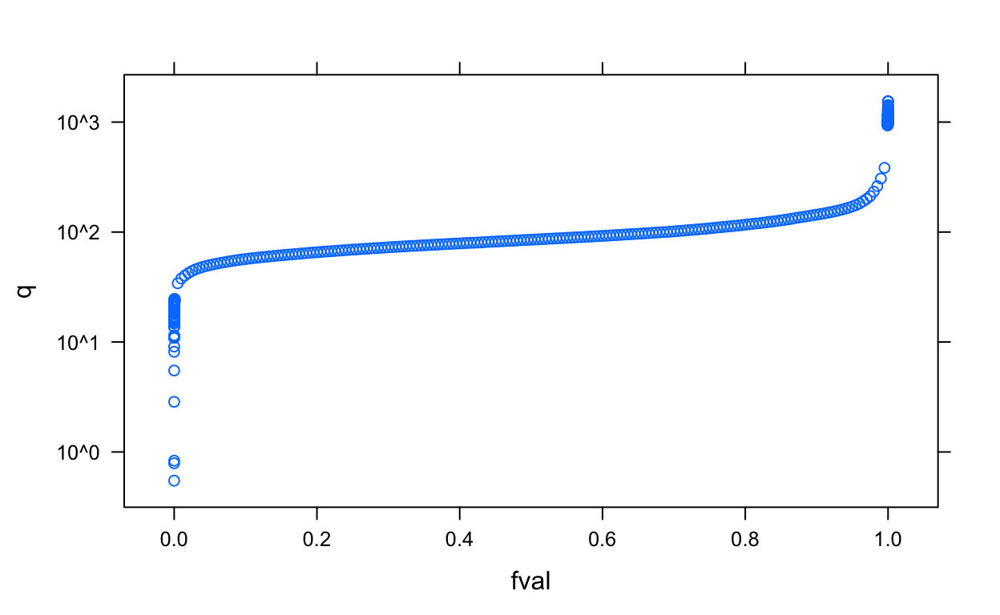
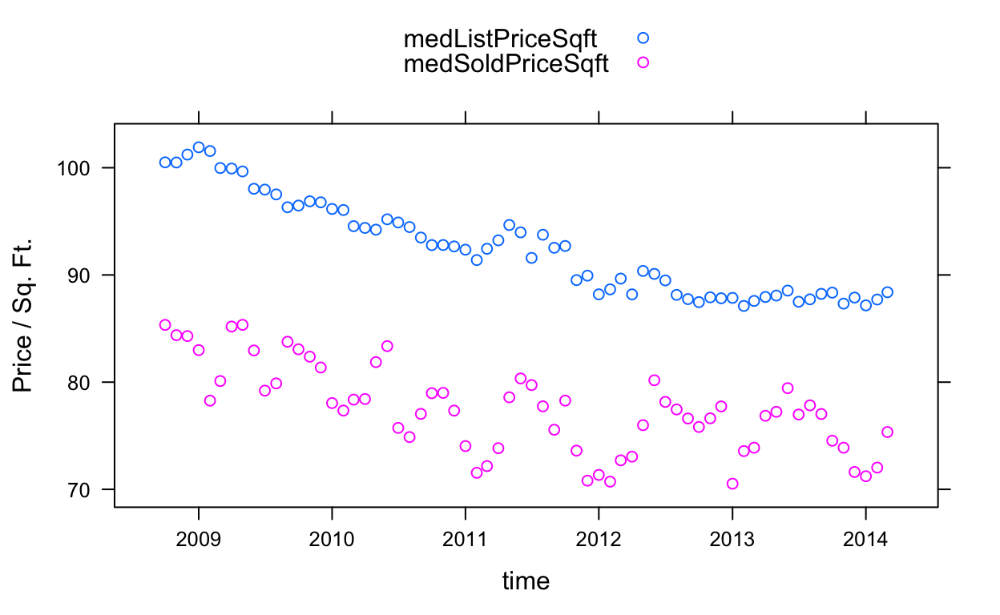
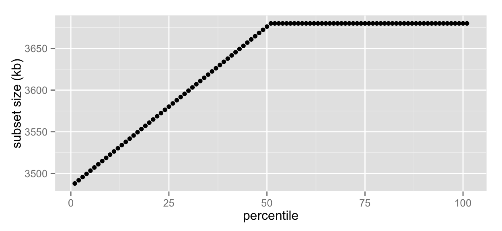
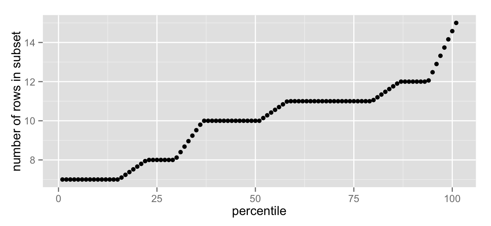
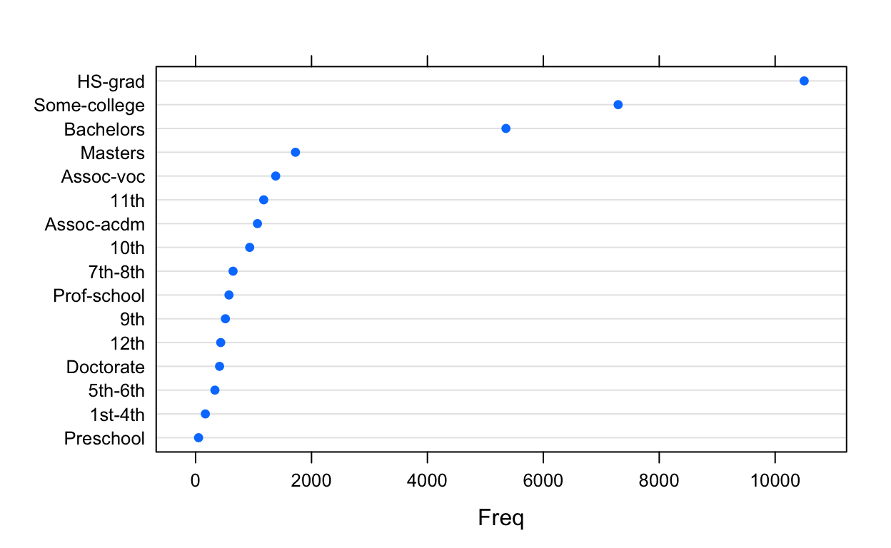
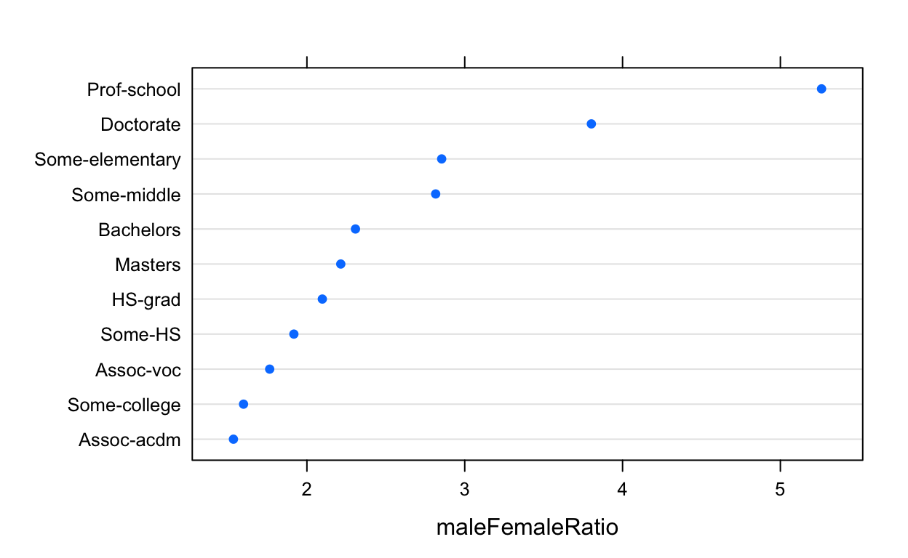
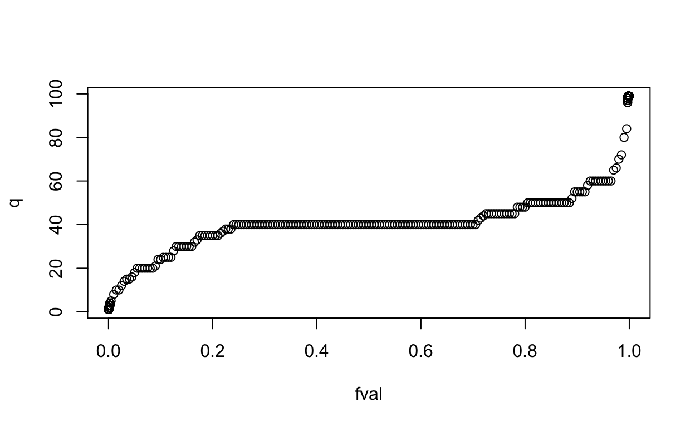
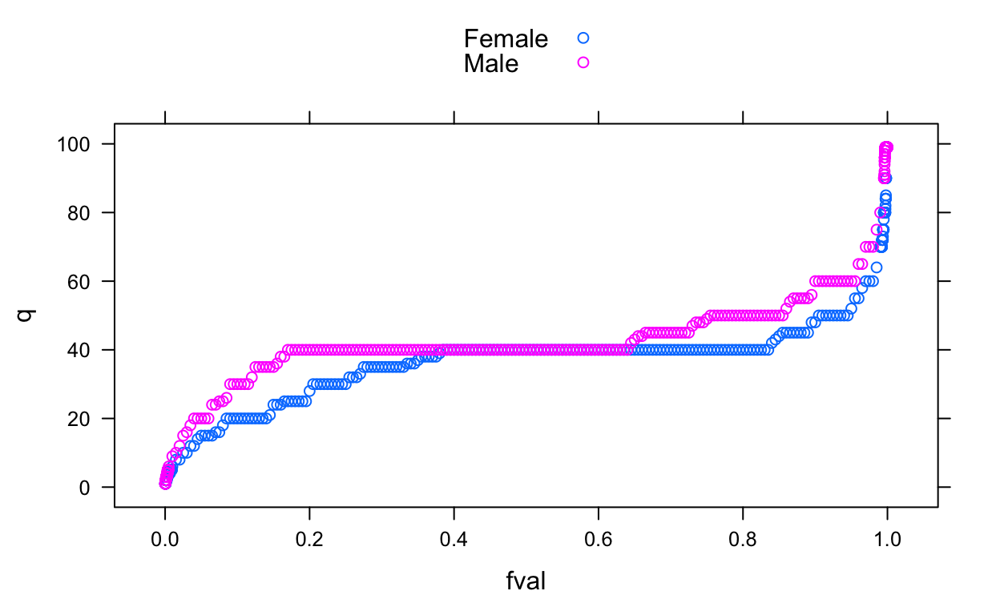
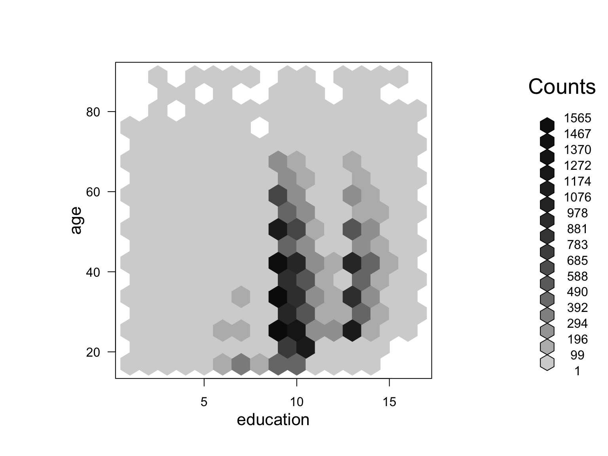

This tutorial covers an implementation of Divide and Recombine (D&R) in the R statistical programming environment, via an R package called datadr. This is one component of the Tessera environment for the analysis of large complex data.
The goal of D&R is to provide an environment for data analysts to carry out deep statistical analysis of large, complex data with as much ease and flexibility as is possible with small datasets.
D&R is accomplished by dividing data into meaningful subsets, applying analytical methods to those subsets, and recombining the results. Recombinations can be numerical or visual. For visualization in the D&R framework, see Trelliscope.
The diagram below is a visual representation of the D&R process.

For a given data set, which may be a collection of large csv files, an R data frame, etc., we apply a division method that partitions the data in some way that is meaningful for the analysis we plan to perform. Often the partitioning is a logical choice based on the subject matter. After dividing the data, we attack the resulting partitioning with several visual and numerical methods, where we apply the method independently to each subset and combine the results. There are many forms of divisions and recombinations, many of which will be covered in this tutorial.
References:
Related projects:
We’ll first lay out some of the major data types and functions in datadr to provide a feel for what is available in the package.
The two major data types in datadr are distributed data frames and distributed data objects. A distributed data frame (ddf) can be thought of as a data frame that is split into chunks – each chunk is a subset of rows of the data frame – which may reside across nodes of a cluster (hence “distributed”). A distributed data object (ddo) is a similar notion except that each subset can be an object with arbitrary structure. Every distributed data frame is also a distributed data object.
The data structure we use to store ddo/ddf objects are key-value pairs. For our purposes, the key is typically a label that uniqueley identifies a subset, and the value is the subset corresponding to the key. Thus, a ddo/ddf is essentially a list, where each element of the list contains a key-value pair.
Functions in datadr can be categorized according to the mechanisms they provide for distributed data types and backend connections, data operations, division-independent operations, and date ingest operations.
Currently, there are three ways to store data using datadr: in memory, on a standard file system (e.g. a hard drive), and on the Hadoop Distributed File System (HDFS). Distributed data objects stored in memory do not require a connection to a backend. However, datasets that exceed the memory capabilities must be stored to disk or to HDFS via a backend connection:
localDiskConn(): instantiate backend connections to ddo / ddf objects that are persisted (i.e. ‘permanently’ stored) to a local disk connectionhdfsConn(): instantiate backend connections to ddo / ddf objects that are persisted to HDFSddf(): instantiate a ddo from a backend connectionddo(): instantiate a ddf from a backend connectiondivide(): divide a ddf, either by conditioning variables or by randomly chosen subsetsrecombine(): take the results of a computation applied to a ddo/ddf and combine them in a number of waysdrLapply(): apply a function to each subset of a ddo/ddf and obtain a new ddo/ddfdrJoin(): join multiple ddo/ddf objects by keydrSample(): take a random sample of subsets of a ddo/ddfdrFilter(): filter out subsets of a ddo/ddf that do not meet a specified criteriadrSubset(): return a subset data frame of a ddfmrExec(): run a traditional MapReduce job on a ddo/ddfAll of these operations kick off MapReduce jobs to perform the desired computation. In datadr, we almost always want a new data set result right away, so there is not a prevailing notion of deferred evaluation as in other distributed computing frameworks. The only exception is a function that can be applied prior to or after any of these data operations that adds a transformation to be applied to each subset at the time of the next data operation. This function is addTransform() and will be discussed in greater detail later in the tutorial
drQuantile(): estimate all-data quantiles, optionally by a grouping variabledrAggregate(): all-data tabulation, similar to R’s aggregate() commanddrHexbin(): all-data hexagonal binning aggregationNote that every data operation works in a backend-agnostic manner, meaning that whether you have data in memory, on your hard drive, or HDFS, you can run the same commands virtually unchanged.
One of the most difficult aspects of dealing with very large data is getting the data into R. In datadr, we have extended the read.table family of functions. They are available as drRead.csv(), drRead.delim(), etc. See drRead.table for additional methods. These are particularly useful for backends like local disk and HDFS. Usage of these methods is discussed in the Reading in Data section.
Before going into some of the details of datadr, let’s first run through some quick examples to get acquainted with some of the functionality of the package.
First, we need to install the necessary components, datadr and trelliscope. These are R packages that we install from github.
install.packages("devtools") # if not already installed
devtools::install_github("tesseradata/datadr")
devtools::install_github("tesseradata/trelliscope")The example we go through will be a small dataset that we can handle in a local R session, and therefore we only need to have these two packages installed. For other installation options when dealing with larger data sets, see the quickstart on our website.
We will use as an example a data set consisting of the median list and sold price of homes in the United States, aggregated by county and month from 2008 to early 2014. These data are available in a package called housingData. To install this package:
devtools::install_github("hafen/housingData")Now we load the packages and look at the housing data:
library(housingData)
library(datadr)
library(trelliscope)
head(housing) fips county state time nSold medListPriceSqft
1 06001 Alameda County CA 2008-10-01 NA 307.9787
2 06001 Alameda County CA 2008-11-01 NA 299.1667
3 06001 Alameda County CA 2008-11-01 NA NA
4 06001 Alameda County CA 2008-12-01 NA 289.8815
5 06001 Alameda County CA 2009-01-01 NA 288.5000
6 06001 Alameda County CA 2009-02-01 NA 287.0370
medSoldPriceSqft
1 325.8118
2 NA
3 318.1150
4 305.7878
5 291.5977
6 NAWe see that we have a data frame with the information we discussed, in addition to the number of units sold.
One way we want to divide the data is by county name and state to be able to study how home prices have evolved over time within county. We can do this with a call to divide():
byCounty <- divide(housing,
by = c("county", "state"), update = TRUE)Our byCounty object is now a distributed data frame (ddf) that is stored in memory. We can see some of its attributes by printing the object:
byCounty
Distributed data frame backed by 'kvMemory' connection
attribute | value
----------------+-----------------------------------------------------------
names | fips(cha), time(Dat), nSold(num), and 2 more
nrow | 224369
size (stored) | 15.73 MB
size (object) | 15.73 MB
# subsets | 2883
* Other attributes: getKeys(), splitSizeDistn(), splitRowDistn(), summary()
* Conditioning variables: county, stateWe see there are 2883 counties, and we can access various attributes by calling methods such as summary(). The update = TRUE that we added to divide() provided some of these attributes. Let’s look at the summary:
summary(byCounty) fips time nSold
------------------- ------------------ -------------------
levels : 2883 missing : 0 missing : 164370
missing : 0 min : 08-10-01 min : 11
> freqTable head < max : 14-03-01 max : 35619
26077 : 140 mean : 274.6582
51069 : 140 std dev : 732.2429
08019 : 139 skewness : 10.338
13311 : 139 kurtosis : 222.8995
------------------- ------------------ -------------------
medListPriceSqft medSoldPriceSqft
-------------------- -------------------
missing : 48399 missing : 162770
min : 0.5482456 min : 17.40891
max : 1544.944 max : 1249.494
mean : 96.72912 mean : 105.5659
std dev : 56.12035 std dev : 69.40658
skewness : 6.816523 skewness : 5.610013
kurtosis : 94.06555 kurtosis : 60.48337
-------------------- ------------------- Since datadr knows that byCounty is a ddf, and because we set update = TRUE, after the division operation global summary statistics were computed for each of the variables.
Suppose we want a more meaningful global summary, such as computing quantiles. datadr can do this in a division-independent way with drQuantile(). For example, let’s look at quantiles for the median list price and plot them using xyplot() from the lattice package:
priceQ <- drQuantile(byCounty, var = "medListPriceSqft")
xyplot(q ~ fval, data = priceQ, scales = list(y = list(log = 10)))
By the way, what does a subset of byCounty look like? byCounty is a list of key-value pairs, which we will learn more about later. Essentially, the collection of subsets can be thought of as a large list, where each list element has a key and a value. To look at the first key-value pair:
byCounty[[1]]$key
[1] "county=Abbeville County|state=SC"
$value
fips time nSold medListPriceSqft medSoldPriceSqft
1 45001 2008-10-01 NA 73.06226 NA
2 45001 2008-11-01 NA 70.71429 NA
3 45001 2008-12-01 NA 70.71429 NA
4 45001 2009-01-01 NA 73.43750 NA
5 45001 2009-02-01 NA 78.69565 NA
...Now, suppose we wish to apply an analytic method to each subset of our data and recombine the result. A simple thing we may want to look at is the slope coefficient of a linear model applied to list prices vs. time for each county.
We can create a function that operates on an input data frame x that does this:
lmCoef <- function(x)
coef(lm(medListPriceSqft ~ time, data = x))[2]We can apply this transformation to each subset in our data with addTransform():
byCountySlope <- addTransform(byCounty, lmCoef)This applies lmCoef() to each subset in a deferred fashion, meaning that for all intents and purposes we can think of byCountySlope as a distributed data object that contains the result of lmCoef() being applied to each subset. But computation is deffered until another data operation is applied to byCountySlope, such as a recombination, which we will do next.
When we look at a subset of byCountySlope, we see what the result will look like:
byCountySlope[[1]]$key
[1] "county=Abbeville County|state=SC"
$value
time
-0.0002323686 Now let’s recombine the slopes into a single data frame. This can be done with the recombine() function, using the combRbind combiner, which is analagous to rbind():
countySlopes <- recombine(byCountySlope, combRbind)head(countySlopes) county state val
time Abbeville County SC -0.0002323686
time1 Acadia Parish LA 0.0019518441
time2 Accomack County VA -0.0092717711
time3 Ada County ID -0.0030197554
time4 Adair County IA -0.0308381951
time5 Adair County KY 0.0034399585There are several data operations beyond divide() and recombine(). Let’s look at a quick example of one of these, drJoin(). Suppose we have multiple related data sources. For example, we have geolocation data for the county centroids. drJoin() will allow us to join multiple data sets by key.
We have a data set, geoCounty, also part of the housingData package, that we want to divide in the same way as we divided the housing data:
head(geoCounty) fips county state lon lat rMapState rMapCounty
1 01001 Autauga County AL -86.64565 32.54009 alabama autauga
2 01003 Baldwin County AL -87.72627 30.73831 alabama baldwin
3 01005 Barbour County AL -85.39733 31.87403 alabama barbour
4 01007 Bibb County AL -87.12526 32.99902 alabama bibb
5 01009 Blount County AL -86.56271 33.99044 alabama blount
6 01011 Bullock County AL -85.71680 32.10634 alabama bullockgeo <- divide(geoCounty, by = c("county", "state"))geo[[1]]$key
[1] "county=Abbeville County|state=SC"
$value
fips lon lat rMapState rMapCounty
1 45001 -82.45851 34.23021 south carolina abbevilleWe see that this division gives us a divided data set with the same keys as byCounty. So we can join it with byCounty:
byCountyGeo <- drJoin(housing = byCounty, geo = geo)What this does is provide us with a new ddo (not a distributed data frame anymore) where for each key, the value is a list with a data frame housing holding the time series data and a data frame geo holding the geographic data. We can see the structure of this for a subset with:
str(byCountyGeo[[1]])List of 2
$ key : chr "county=Abbeville County|state=SC"
$ value:List of 2
..$ housing:'data.frame': 66 obs. of 5 variables:
.. ..$ fips : chr [1:66] "45001" "45001" "45001" "45001" ...
.. ..$ time : Date[1:66], format: "2008-10-01" ...
.. ..$ nSold : num [1:66] NA NA NA NA NA NA NA NA NA NA ...
.. ..$ medListPriceSqft: num [1:66] 73.1 70.7 70.7 73.4 78.7 ...
.. ..$ medSoldPriceSqft: num [1:66] NA NA NA NA NA NA NA NA NA NA ...
..$ geo :'data.frame': 1 obs. of 5 variables:
.. ..$ fips : chr "45001"
.. ..$ lon : num -82.5
.. ..$ lat : num 34.2
.. ..$ rMapState : chr "south carolina"
.. ..$ rMapCounty: chr "abbeville"
..- attr(*, "split")='data.frame': 1 obs. of 2 variables:
.. ..$ county: chr "Abbeville County"
.. ..$ state : chr "SC"
- attr(*, "class")= chr [1:2] "kvPair" "list"We have a more comprehensive tutorial for using Trelliscope, but for completeness here and for some motivation to get through this tutorial and move on to the Trelliscope tutorial, we provide a simple example of taking a ddf and creating a Trelliscope display from it.
In short, a Trelliscope display is like a Trellis display, or ggplot with faceting, or small multiple plot, or whatever you are used to calling the action of breaking a set of data into pieces and applying a plot to each piece and then arranging those plots in a grid and looking at them. With Trelliscope, we are able to create such displays on data with a very large number of subsets and view them in an interactive and meaningful way.
For a Trelliscope display, we must connect to a “visualization database” (VDB), which is a directory on our computer where we are going to organize all of the information about our displays (we create many over the course of an analysis). Typically, we will set up a single VDB for each project we are working on. We can do this with the vdbConn() function:
vdbConn("vdb", name = "tesseraTutorial")This connects to a directory called "vdb" relative to our current working directory. R holds this connection in its global options so that subsequent calls will know where to put things without explicitly specifying the connection each time.
To create a Trelliscope display, we need to first specify a panel function, which specifies what to plot for each subset. It takes as input either a key-value pair or just a value, depending on whether the function has two arguments or one.
For example, here is a panel function that takes a value and creates a lattice xyplot of list and sold price over time:
timePanel <- function(x)
xyplot(medListPriceSqft + medSoldPriceSqft ~ time,
data = x, auto.key = TRUE, ylab = "Price / Sq. Ft.")Let’s test it on a subset:
timePanel(byCounty[[20]]$value)
Great!
Another optional thing we can do is specify a cognostics function that is applied to each subset. A cognostic is a metric that tells us an interesting attribute about a subset of data, and we can use cognostics to have more worthwhile interactions with all of the panels in the display. A cognostic function needs to return a list of metrics:
priceCog <- function(x) { list(
slope = cog(lmCoef(x), desc = "list price slope"),
meanList = cogMean(x$medListPriceSqft),
listRange = cogRange(x$medListPriceSqft),
nObs = cog(length(which(!is.na(x$medListPriceSqft))),
desc = "number of non-NA list prices")
)}We use the cog() function to wrap our metrics so that we can provide a description for the cognostic. We may also employ special cognostics functions like cogMean() and cogRange() to compute mean and range with a default description.
We should test the cognostics function on a subset:
priceCog(byCounty[[1]]$value)$slope
time
-0.0002323686
$meanList
[1] 72.76927
$listRange
[1] 23.08482
$nObs
[1] 66Now we can create a Trelliscope display by sending our data, our panel function, and our cognostics function to makeDisplay():
makeDisplay(byCounty,
name = "list_sold_vs_time_datadr_tut",
desc = "List and sold price over time",
panelFn = timePanel,
cogFn = priceCog,
width = 400, height = 400,
lims = list(x = "same"))If you have been dutifully following along with this example in your own R console, you can now view the display with the following:
view()If you have not been following along but are wondering what that view() command did, you can visit here for an online version. You will find a list of displays to choose from, of which the one with the name list_sold_vs_time_datadr_tut is the one we just created. This brings up the point that you can share your Trelliscope displays online – more about that as well as how to use the viewer will be covered in the Trelliscope tutorial – but feel free to play around with the viewer.
This covers the basics of datadr and a bit of trelliscope. Hopefully you now feel comfortable enough to dive in and try some things out. The remainder of this tutorial and the Trelliscope tutorial will provide greater detail.
Now that we have seen some examples and have a good feel for what datadr can do, if you have used plyr or dplyr packages, you may be noticing a few similarities.
If you have not used these packages before, you can skip this section, but if you have, we will go over a quick simple example of how to do the same thing in the three packages to help the plyr user have a better understanding of how to map their knowledge of those packages to datadr.
It is also worth discussing some of the similarites and differences to help understand when datadr is useful. We expand on this in the FAQ. In a nutshell, datadr and dplyr are very different and are actually complementary. We often use the amazing features of dplyr for within-subset computations, but we need datadr to deal with complex data structures and potentially very large data.
For a simple example, we turn to the famous iris data. Suppose we want to compute the mean sepal length by species:
plyr:library(plyr)
ddply(iris, .(Species), function(x)
data.frame(val = mean(x$Sepal.Length)))With plyr, we are performing the split, apply, and combine all in the same step.
dplyr:library(dplyr)
iris %>%
group_by(Species) %>%
summarise(val = mean(Sepal.Length))Here, we call group_by() to create a bySpecies object, which is the same object as iris but with additional information about the indices of where the rows for each species are. Then we call summarise() which computes the mean sepal length for each group and returns the result as a data frame.
datadr:library(datadr)
divide(iris, by = "Species") %>%
addTransform(function(x) mean(x$Sepal.Length)) %>%
recombine(combRbind)Here, we call divide() to partition the iris data by species, resulting in a “distributed data frame”, called bySpecies. Note that this result is a new data object - an important and deliberate distinction. Then we call addTransform() to apply a function that computes the mean sepal length to each partition. Then we call recombine() to bind all the results into a single data frame.
The outline for the remainder of this tutorial is as follows:
datadr.In D&R, data is partitioned into subsets. Each subset is represented as a key-value pair. Collections of key-value pairs are distributed data objects (ddo), or in the case of the value being a data frame, distributed data frames (ddf), and form the basic input and output types for all D&R operations. This section introduces these concepts and illustrates how they are used in datadr.
In datadr, key-value pairs are R lists with two elements, one for the key and one for the value. For example,
# simple key-value pair example
list(1:5, rnorm(10))[[1]]
[1] 1 2 3 4 5
[[2]]
[1] -1.2070657 0.2774292 1.0844412 -2.3456977 0.4291247 0.5060559
[7] -0.5747400 -0.5466319 -0.5644520 -0.8900378is a key-value pair with integers 1-5 as the key and 10 random normals as the value. Typically, a key is used as a unique identifier for the value. For datadr it is recommended to make the key a simple string when possible.
There is a convenience function kvPair() for specifying a key-value pair:
# using kvPair
kvPair(1:5, rnorm(10))$key
[1] 1 2 3 4 5
$value
[1] -0.47719270 -0.99838644 -0.77625389 0.06445882 0.95949406
[6] -0.11028549 -0.51100951 -0.91119542 -0.83717168 2.41583518This provides names for the list elements and is a useful function when an operation must explicitly know that it is dealing with a key-value pair and not just a list.
D&R data objects are made up of collections of key-value pairs. In datadr, these are represented as lists of key-value pair lists. As an example, consider the iris data set, which consists of measurements of 4 aspects for 50 flowers from each of 3 species of iris. Suppose we would like to split the data into key-value pairs by species. We can do this by passing key-value pairs to a function kvPairs():
# create by-species key-value pairs
irisKV <- kvPairs(
kvPair("setosa", subset(iris, Species == "setosa")),
kvPair("versicolor", subset(iris, Species == "versicolor")),
kvPair("virginica", subset(iris, Species == "virginica"))
)
irisKV[[1]]
$key
[1] "setosa"
$value
Sepal.Length Sepal.Width Petal.Length Petal.Width Species
1 5.1 3.5 1.4 0.2 setosa
2 4.9 3.0 1.4 0.2 setosa
3 4.7 3.2 1.3 0.2 setosa
4 4.6 3.1 1.5 0.2 setosa
5 5.0 3.6 1.4 0.2 setosa
...
[[2]]
$key
[1] "versicolor"
$value
Sepal.Length Sepal.Width Petal.Length Petal.Width Species
51 7.0 3.2 4.7 1.4 versicolor
52 6.4 3.2 4.5 1.5 versicolor
53 6.9 3.1 4.9 1.5 versicolor
54 5.5 2.3 4.0 1.3 versicolor
55 6.5 2.8 4.6 1.5 versicolor
...
[[3]]
$key
[1] "virginica"
$value
Sepal.Length Sepal.Width Petal.Length Petal.Width Species
101 6.3 3.3 6.0 2.5 virginica
102 5.8 2.7 5.1 1.9 virginica
103 7.1 3.0 5.9 2.1 virginica
104 6.3 2.9 5.6 1.8 virginica
105 6.5 3.0 5.8 2.2 virginica
...The result is a list of 3 key-value pairs. We chose the species to be the key and the corresponding data frame to be the value for each pair.
kvPairs() is basically a wrapper for list(). It checks to make sure key-value pairs are valid and makes sure they are printed nicely. In pratice we actually very rarely need specify key-value pairs like this, but this is useful for illustration.
This example shows how we can partition our data into key-value pairs that have meaning – each subset represents measurements for one species. The ability to divide the data up into pieces allows us to distribute datasets that might be too large for a single disk across multiple machines, and also allows us to distribute computation, because in D&R we apply methods independently to each subset.
Here, we manually created the partition by species, but datadr provides simple mechanisms for specifying divisions, which we will cover later in the tutorial. Prior to doing that, however, we need to discuss how collections of key-value pairs are represented in datadr as distributed data objects.
In datadr, a collection of key-value pairs along with attributes about the collection constitute a distributed data object (ddo). Most datadr operations require a ddo, and hence it is important to represent key-value pair collections as such.
We will continue to use our collection of key-value pairs we created previously irisKV:
irisKV <- kvPairs(
kvPair("setosa", subset(iris, Species == "setosa")),
kvPair("versicolor", subset(iris, Species == "versicolor")),
kvPair("virginica", subset(iris, Species == "virginica"))
)To initialize a collection of key-value pairs as a distributed data object, we use the ddo() function:
# create ddo object from irisKV
irisDdo <- ddo(irisKV)ddo() simply takes the collection of key-value pairs and attaches additional attributes to the resulting ddo object. Note that in this example, since the data is in memory, we are supplying the data directly as the argument to ddo(). For larger datasets stored in more scalable backends, instead of passing the data directly, a connection that points to where the key-value pairs are stored is provided. This is discussed in more detail in the Store/Compute Backends sections.
Objects of class “ddo” have several methods that can be invoked on them. The most simple of these is a print method:
irisDdo
Distributed data object backed by 'kvMemory' connection
attribute | value
----------------+-----------------------------------------------------------
size (stored) | 12.67 KB
size (object) | 12.67 KB
# subsets | 3
* Other attributes: getKeys()
* Missing attributes: splitSizeDistnThe print method shows several attributes that have been computed for the data.
From the printout of irisDdo, we see that a ddo has several attributes. The most basic ones:
size (object): The total size of the all of the data as represented in memory in R is 12.67 KB (that’s some big data!)size (stored): With backends other than in-memory, the size of data serialized and possibly compressed to disk can be very different from object size, which is useful to know. In this case, it’s the same since the object is in memory.# subsets: There are 3 subsets (one for each species)We can look at the keys with:
# look at irisDdo keys
getKeys(irisDdo)[[1]]
[1] "setosa"
[[2]]
[1] "versicolor"
[[3]]
[1] "virginica"We can also get an example key-value pair:
# look at an example key-value pair of irisDdo
kvExample(irisDdo)$key
[1] "setosa"
$value
Sepal.Length Sepal.Width Petal.Length Petal.Width Species
1 5.1 3.5 1.4 0.2 setosa
2 4.9 3.0 1.4 0.2 setosa
3 4.7 3.2 1.3 0.2 setosa
4 4.6 3.1 1.5 0.2 setosa
5 5.0 3.6 1.4 0.2 setosa
...kvExample is useful for obtaining a subset key-value pair against which we can test out different analytical methods before applying them across the entire data set.
Another attribute, splitSizeDistn is empty. This attribute provides information about the quantiles of the distribution of the size of each division. With very large data sets with a large number of subsets, this can be useful for getting a feel for how uniform the subset sizes are.
The splitSizeDistn attribute and more that we will see in the future are not computed by default when ddo() is called. This is because it requires a computation over the data set, which can take some time with very large datasets, and may not always be desired or necessary.
If you decide at any point that you would like to update the attributes of your ddo, you can call:
# update irisDdo attributes
irisDdo <- updateAttributes(irisDdo)
irisDdo
Distributed data object backed by 'kvMemory' connection
attribute | value
----------------+-----------------------------------------------------------
size (stored) | 12.67 KB
size (object) | 12.67 KB
# subsets | 3
* Other attributes: getKeys(), splitSizeDistn()The splitSizeDistn attribute is now available. We can look at it with the accessor splitSizeDistn():
# plot distribution of the size of the key-value pairs
qplot(y = splitSizeDistn(irisDdo),
xlab = "percentile", ylab = "subset size (kb)")
Another way to get updated attributes is at the time the ddo is created, by setting update = TRUE:
# update at the time ddo() is called
irisDdo <- ddo(irisKV, update = TRUE)Notice the first line of output from the irisDdo object printout. It states that the object is backed by a “kvMemory” (key-value pairs in memory) connection.
We will talk about other backends for storing and processing larger data sets that don’t fit in memory or even on your workstation’s disk. The key here is that the interface always stays the same, regardless of whether we are working with terabytes of kilobytes of data.
We can access subsets of the data by key or by index:
irisDdo[["setosa"]]$key
[1] "setosa"
$value
Sepal.Length Sepal.Width Petal.Length Petal.Width Species
1 5.1 3.5 1.4 0.2 setosa
2 4.9 3.0 1.4 0.2 setosa
3 4.7 3.2 1.3 0.2 setosa
4 4.6 3.1 1.5 0.2 setosa
5 5.0 3.6 1.4 0.2 setosa
...irisDdo[[1]]$key
[1] "setosa"
$value
Sepal.Length Sepal.Width Petal.Length Petal.Width Species
1 5.1 3.5 1.4 0.2 setosa
2 4.9 3.0 1.4 0.2 setosa
3 4.7 3.2 1.3 0.2 setosa
4 4.6 3.1 1.5 0.2 setosa
5 5.0 3.6 1.4 0.2 setosa
...irisDdo[c("setosa", "virginica")][[1]]
$key
[1] "setosa"
$value
Sepal.Length Sepal.Width Petal.Length Petal.Width Species
1 5.1 3.5 1.4 0.2 setosa
2 4.9 3.0 1.4 0.2 setosa
3 4.7 3.2 1.3 0.2 setosa
4 4.6 3.1 1.5 0.2 setosa
5 5.0 3.6 1.4 0.2 setosa
...
[[2]]
$key
[1] "virginica"
$value
Sepal.Length Sepal.Width Petal.Length Petal.Width Species
101 6.3 3.3 6.0 2.5 virginica
102 5.8 2.7 5.1 1.9 virginica
103 7.1 3.0 5.9 2.1 virginica
104 6.3 2.9 5.6 1.8 virginica
105 6.5 3.0 5.8 2.2 virginica
...irisDdo[1:2][[1]]
$key
[1] "setosa"
$value
Sepal.Length Sepal.Width Petal.Length Petal.Width Species
1 5.1 3.5 1.4 0.2 setosa
2 4.9 3.0 1.4 0.2 setosa
3 4.7 3.2 1.3 0.2 setosa
4 4.6 3.1 1.5 0.2 setosa
5 5.0 3.6 1.4 0.2 setosa
...
[[2]]
$key
[1] "versicolor"
$value
Sepal.Length Sepal.Width Petal.Length Petal.Width Species
51 7.0 3.2 4.7 1.4 versicolor
52 6.4 3.2 4.5 1.5 versicolor
53 6.9 3.1 4.9 1.5 versicolor
54 5.5 2.3 4.0 1.3 versicolor
55 6.5 2.8 4.6 1.5 versicolor
...Accessing by key is much simpler when the key is a character string, but subsetting works even when passing a list of non-string keys, or even a digest() of the desired key object (if you don’t know what that means, don’t worry!).
Key-value pairs in distributed data objects can have any structure. If we constrain the values to be data frames or readily transformable into data frames, we can represent the object as a distributed data frame (ddf). A ddf is a ddo with additional attributes. Having a uniform data frame structure for the values provides several benefits and data frames are required for specifying division methods.
Our irisKV data we created earlier has values that are data frames, so we can cast it as a distributed data frame like this:
# create ddf object from irisKV
irisDdf <- ddf(irisKV, update = TRUE)
irisDdf
Distributed data frame backed by 'kvMemory' connection
attribute | value
----------------+-----------------------------------------------------------
names | Sepal.Length(num), Sepal.Width(num), and 3 more
nrow | 150
size (stored) | 12.67 KB
size (object) | 12.67 KB
# subsets | 3
* Other attributes: getKeys(), splitSizeDistn(), splitRowDistn(), summary()The printout of irisDdf above shows the ddo attributes we saw previously (because every ddf is also a ddo), but we also see some new data-frame-related attributes (which were automatically updated because we specified update = TRUE). These include:
names: a list of the variablesnrow: the total number of rows in the data setAlso there are additional “other” attributes listed at the bottom. The summary attribute can be useful for getting an initial look at the variables in your ddf, and is sometimes required for later computations, such as quantile estimation with drQuantile(), where the range of a variable is required to get a good quantile approximation. Summary statistics are all computed simultaneously in one MapReduce job with a call to updateAttributes().
The numerical summary statistics are computed using a numerically stable algorithm.
Summary statistics include:
For each numeric variable:
nna: number of missing valuesstats: list of mean, variance, skewness, kurtosisrange: min, maxFor each categorical variable:
nobs: number of observationsnna: number of missing valuesfreqTable: a data frame containing a frequency tableSummaries can be accessed by:
# look at irisDdf summary stats
summary(irisDdf) Sepal.Length Sepal.Width Petal.Length
-------------------- -------------------- ---------------------
missing : 0 missing : 0 missing : 0
min : 4.3 min : 2 min : 1
max : 7.9 max : 4.4 max : 6.9
mean : 5.843333 mean : 3.057333 mean : 3.758
std dev : 0.8280661 std dev : 0.4358663 std dev : 1.765298
skewness : 0.3117531 skewness : 0.3157671 skewness : -0.2721277
kurtosis : 2.426432 kurtosis : 3.180976 kurtosis : 1.604464
-------------------- -------------------- ---------------------
Petal.Width Species
--------------------- ------------------
missing : 0 levels : 3
min : 0.1 missing : 0
max : 2.5 > freqTable head <
mean : 1.199333 setosa : 50
std dev : 0.7622377 versicolor : 50
skewness : -0.1019342 virginica : 50
kurtosis : 1.663933
--------------------- ------------------ For categorical variables, the top four values and their frequency is printed. To access the values themselves, we can do, for example:
summary(irisDdf)$Sepal.Length$stats$mean
[1] 5.843333
$var
[1] 0.6856935
$skewness
[1] 0.3117531
$kurtosis
[1] 2.426432or:
summary(irisDdf)$Species$freqTable value Freq
1 setosa 50
2 versicolor 50
3 virginica 50Note that with an object of class “ddf”, you can use some of the methods that apply to regular data frames:
nrow(irisDdf)150ncol(irisDdf)5names(irisDdf)[1] "Sepal.Length" "Sepal.Width" "Petal.Length" "Petal.Width"
[5] "Species" However, datadr does not go too far beyond this in terms of making a ddf feel or behave exactly like a regular R data frame.
ddo() and ddf()It is worth noting that it is possible to pass a single data frame to ddo() or ddf(). The result is a single key-value pair with the data frame as the value, and "" as the key. This is an option strictly for convenience and with the idea that further down the line operations will be applied that split the data up into a more useful set of key-value pairs. Here is an example:
# initialize ddf from a data frame
irisDf <- ddf(iris, update = TRUE)This of course only makes sense for data small enough to fit in memory in the first place. In the backends section, we will discuss other backends for larger data and how data can be added to objects or read in from a raw source in these cases.
A very common thing to want to do to a ddo or ddf is apply a transformation to each of the subsets. For example we may want to apply a transformation that :
This will be a routine thing to do when we start talking about D&R operations.
We can add transformations to a ddo/ddf using addTransform(). Let’s look at an example. Recall the iris data split by species:
# iris ddf by Species
irisKV <- kvPairs(
kvPair("setosa", subset(iris, Species == "setosa")),
kvPair("versicolor", subset(iris, Species == "versicolor")),
kvPair("virginica", subset(iris, Species == "virginica"))
)
irisDdf <- ddf(irisKV)Suppose we want to add a simple transformation that computes the mean sepal width for each subset. I can do this with the following:
irisSL <- addTransform(irisDdf, function(x) mean(x$Sepal.Width))I simply provide my input ddo/ddf irisDdf and specify the function I want to apply to each subset.
If the function I provide has two arguments, it will pass both the key and value of the current subset as arguments to the function. If it has one argument, it will pass just the value. In this case, it has one argument, so I can expect x inside my function to hold the data frame value for a subset of irisDdf. Note that I can pre-define this function:
The output of a transformation function specified in addTransform() will always be treated as a value unless the function returns a key-value pair via kvPair().
meanSL <- function(x) mean(x$Sepal.Width)
irisSL <- addTransform(irisDdf, meanSL)Let’s now look at the result:
irisSL
Transformed distributed data object backed by 'kvMemory' connection
attribute | value
----------------+-----------------------------------------------------------
size (stored) | 12.67 KB (before transformation)
size (object) | 12.67 KB (before transformation)
# subsets | 3
* Other attributes: getKeys()Our input data was a ddf, but the output is a ddo! What is in the output?
irisSL[[1]]$key
[1] "setosa"
$value
[1] 3.428We see that irisSL now holds the data that we would expect – the result of our transformation – the mean sepal length. This value is not a data frame, so irisSL is a ddo.
But notice in the printout of irisSL above that it says that the object size is still the same as our input data, irisDdf. This is because when you add a transformation to a ddo/ddf, the transformation is not applied immediately, but is deferred until a data operation is applied. Data operations include divide(), recombine(), drJoin(), drLapply(), drFilter(), drSample(), and drSubset(). When any of these are invoked on an object with a transformation attached to it, the transformation will be applied prior to any other computation. The transformation will also be applied any time a subset of the data is requested. Thus although the data has not been physically transformed after a call of addTransform(), we can think of it conceptually as already being transformed.
When addTransform() is called, it is tested on a subset of the data to make sure we have all of the necessary global variables and packages loaded necessary to portably perform the transformation. If there are any package dependencies, it makes a note and stores this information with the object. Also if there are any global object dependencies, these are also stored with the object. So whatever objects exist at the time of applying the transformation, any subsequent changes to the object or removal of the object will not effect the transformation.
For example, consider the following:
# set a global variable
globalVar <- 7
# define a function that depends on this global variable
meanSLplus7 <- function(x) mean(x$Sepal.Width) + globalVar
# add this transformation to irisDdf
irisSLplus7 <- addTransform(irisDdf, meanSLplus7)
# look at the first key-value pair (invokes transformation)
irisSLplus7[[1]]$key
[1] "setosa"
$value
[1] 10.428# remove globalVar
rm(globalVar)
# look at the first key-value pair (invokes transformation)
irisSLplus7[[1]]$key
[1] "setosa"
$value
[1] 10.428We still get a result even though the global dependency of meanSLplus7() has been removed.
A final note about addTransform(): it is possible to add multiple transformations to a distributed data object, in which case they are applied in the order supplied, but only one transform should ever be necessary.
For example, suppose we want to further modify irisSL to append some text to the keys:
irisSL2 <- addTransform(irisSL, function(k, v) kvPair(paste0(k, "_mod"), v))*** finding global variables used in 'fn'... [none]
package dependencies: datadr
*** testing 'fn' on a subset... okirisSL2[[1]]$key
[1] "setosa_mod"
$value
[1] 3.428This is also an example of using a transformation function to modify the key.
The majority of this documentation will cover division and recombination, but here, we present some methods that are available for common data operations that come in handy for manipulating data in various ways.
It is convenient to be able use the familiar lapply() approach to apply a function to each key-value pair. An lapply() method, called drLapply() is available for ddo/ddf objects. The function you specify follows the same convention as described earlier (if it has one argument, it is applied to the value only, if it has two arguments, it is applied to the key and value). A ddo is returned.
Here is an example of using drLapply() to the irisDdf data:
# get the mean Sepal.Width for each key-value pair in irisDdf
means <- drLapply(irisDdf, function(x) mean(x$Sepal.Width))
# turn the resulting ddo into a list
as.list(means)[[1]]
[[1]][[1]]
[1] "setosa"
[[1]][[2]]
[1] 3.428
[[2]]
[[2]][[1]]
[1] "versicolor"
[[2]][[2]]
[1] 2.77
[[3]]
[[3]][[1]]
[1] "virginica"
[[3]][[2]]
[1] 2.974A drFilter() function is available which takes a function that is applied to each key-value pair. If the function returns TRUE, that key-value pair will be included in the resulting ddo/ddf, if FALSE, it will not.
Here is an example that keeps all subsets with mean sepal width less than 3:
# keep subsets with mean sepal width less than 3
drFilter(irisDdf, function(v) mean(v$Sepal.Width) < 3)
Distributed data frame backed by 'kvMemory' connection
attribute | value
----------------+-----------------------------------------------------------
names | Sepal.Length(num), Sepal.Width(num), and 3 more
nrow | 100
size (stored) | 7.55 KB
size (object) | 7.55 KB
# subsets | 2
* Other attributes: getKeys()
* Missing attributes: splitSizeDistn, splitRowDistn, summaryThe drJoin() operation takes multiple input ddo/ddf objects and merges their values by key. This is a very useful function when there are multiple input sources that you would like to group together.
Suppose with the iris data that we have two separate input sources, one that reports the sepal width and another that reports the sepal length for each species:
# create two new ddo objects that contain sepal width and sepal length
sw <- drLapply(irisDdf, function(x) x$Sepal.Width)
sl <- drLapply(irisDdf, function(x) x$Sepal.Length)An example subset of sw looks like this:
sw[[1]]$key
[1] "setosa"
$value
[1] 3.5 3.0 3.2 3.1 3.6 3.9 3.4 3.4 2.9 3.1 3.7 3.4 3.0 3.0 4.0 4.4 3.9
[18] 3.5 3.8 3.8 3.4 3.7 3.6 3.3 3.4 3.0 3.4 3.5 3.4 3.2 3.1 3.4 4.1 4.2
[35] 3.1 3.2 3.5 3.6 3.0 3.4 3.5 2.3 3.2 3.5 3.8 3.0 3.8 3.2 3.7 3.3Both sw and sl have the same set of keys, and the value is a vector of either the sepal width or length. To join them together, we can call drJoin(). This function takes any number of ddo/ddf inputs, and they must be named. It also optionally takes a postTransFn argument, which allows a transformation function to be applied the joined result.
By default, drJoin() groups the various data sources by key, and the resulting value is a named list, where each element of the list is the value from each data source. For example, to join the sw and sl data, we get the following:
# join sw and sl by key
joinRes <- drJoin(Sepal.Width = sw, Sepal.Length = sl)
# look at first key-value pair
joinRes[[1]]$key
[1] "setosa"
$value
$Sepal.Width
[1] 3.5 3.0 3.2 3.1 3.6 3.9 3.4 3.4 2.9 3.1 3.7 3.4 3.0 3.0 4.0 4.4 3.9
[18] 3.5 3.8 3.8 3.4 3.7 3.6 3.3 3.4 3.0 3.4 3.5 3.4 3.2 3.1 3.4 4.1 4.2
[35] 3.1 3.2 3.5 3.6 3.0 3.4 3.5 2.3 3.2 3.5 3.8 3.0 3.8 3.2 3.7 3.3
$Sepal.Length
[1] 5.1 4.9 4.7 4.6 5.0 5.4 4.6 5.0 4.4 4.9 5.4 4.8 4.8 4.3 5.8 5.7 5.4
[18] 5.1 5.7 5.1 5.4 5.1 4.6 5.1 4.8 5.0 5.0 5.2 5.2 4.7 4.8 5.4 5.2 5.5
[35] 4.9 5.0 5.5 4.9 4.4 5.1 5.0 4.5 4.4 5.0 5.1 4.8 5.1 4.6 5.3 5.0The resulting object, joinRes, has subsets with the same keys, but the values are now named lists that consist of the values from both data sets.
It can be useful to create a new data set of randomly sampled subsets of a large data set. The drSample() function provides for this. Currently, it is as simple as specifying the fraction of subsets you would like the resulting data set to have:
set.seed(1234)
drSample(irisDdf, fraction = 0.25)
Distributed data object backed by 'kvMemory' connection
attribute | value
----------------+-----------------------------------------------------------
size (stored) | 3.6 KB
size (object) | 3.6 KB
# subsets | 1
* Other attributes: getKeys()
* Missing attributes: splitSizeDistndatadr provides a high-level language for D&R that simply consists of functions divide() for performing division, and recombine() for performing recombinations. The goal is for these methods to be sufficient for most operations a user might want to carry out. There are several ways these methods can be invoked to perform different tasks, which is outlined in this section.
divide() and recombine() provide a way to create a persistent partitioning of the data in various ways and then provide several mechanisms combining results of analytical methods applied to the divisions. Being able to easily perform these operations alone provides a lot of power for ad-hoc analysis of very large data sets. However, we plan to inject results from D&R theory and methods to provide an even more rich environment for analysis.
Division is achieved through the divide() method. The function documentation is available here.
Currently there are two types of divisions supported: conditioning variable, and random replicate. In this section we discuss the major arguments to divide(), the most important of which is by.
In the previous section, we were looking at a division of the iris data by species. We manually split the data into key-value pairs. We can achieve the same result by doing conditioning variable division:
irisDdf <- ddf(iris)
# divide irisDdf by species
bySpecies <- divide(irisDdf, by = "Species", update = TRUE)divide() must take a ddf object.
Since the result of splitting the iris data by species is a data frame, bySpecies is now a ddf. We can inspect it with the following:
bySpecies
Distributed data frame backed by 'kvMemory' connection
attribute | value
----------------+-----------------------------------------------------------
names | Sepal.Length(num), Sepal.Width(num), and 2 more
nrow | 150
size (stored) | 10.71 KB
size (object) | 10.71 KB
# subsets | 3
* Other attributes: getKeys(), splitSizeDistn(), splitRowDistn(), summary()
* Conditioning variables: SpeciesWe see the same printout as we had with our manually-created division, with the addition of information about how the data was divided.
In the above example, conditioning variable division was specified with the by argument. Here, simply specifying a character string or vector of character strings (for multiple conditioning variables) will invoke conditioning variable division. A more formal way to achieve this is by using condDiv() to build the division specification:
# divide irisDdf by species using condDiv()
bySpecies <- divide(irisDdf, by = condDiv("Species"), update = TRUE)Using condDiv() is not necessary but follows the general idea of using a function to build a division specification that is and will be followed for other division methods.
Here’s what a subset of the divide data looks like:
# look at a subset of bySpecies
bySpecies[[1]]$key
[1] "Species=setosa"
$value
Sepal.Length Sepal.Width Petal.Length Petal.Width
1 5.1 3.5 1.4 0.2
2 4.9 3.0 1.4 0.2
3 4.7 3.2 1.3 0.2
4 4.6 3.1 1.5 0.2
5 5.0 3.6 1.4 0.2
...Note that the “Species” column is missing in the value data frame. This is because it is the variable we split on, and therefore has the same value for the entire subset. All conditioning variables for a given subset are stored in a “splitVars” attribute, and can be retrieved by getSplitVars():
# get the split variable (Species) for some subsets
getSplitVars(bySpecies[[1]])$Species
[1] "setosa"getSplitVars(bySpecies[[2]])$Species
[1] "versicolor"The keys for the division result are strings that specify how the data was divided:
# look at bySpecies keys
getKeys(bySpecies)[[1]]
[1] "Species=setosa"
[[2]]
[1] "Species=versicolor"
[[3]]
[1] "Species=virginica"Another way to divide data that is currently implemented is random replicate division. For this, we use the division specification function rrDiv(). This function allows you to specify the number of rows you would like each random subset to have, and optionally a random seed to use for the random assignment of rows to subsets.
Suppose we want to split the iris data into random subsets with roughly 10 rows per subset:
# divide iris data into random subsets of 10 rows per subset
set.seed(123)
byRandom <- divide(bySpecies, by = rrDiv(10), update = TRUE)Note that we passed bySpecies as the input data. We could just as well have specified irisDdf or any other division of the iris data. The input partitioning doesn’t matter.
byRandom
Distributed data frame backed by 'kvMemory' connection
attribute | value
----------------+-----------------------------------------------------------
names | Sepal.Length(num), Sepal.Width(num), and 2 more
nrow | 150
size (stored) | 23.52 KB
size (object) | 23.52 KB
# subsets | 15
* Other attributes: getKeys(), splitSizeDistn(), splitRowDistn(), summary()
* Approx. number of rows in each division: 10We see there are still 150 rows (as there should be), but now there are 15 subsets.
We can look at the distribution of the of the number of rows in each subset:
# plot distribution of the number of rows in each subset
qplot(y = splitRowDistn(byRandom),
xlab = "percentile", ylab = "number of rows in subset")
We see that there are not exactly 10 rows in each subset, but 10 rows on average. The random replicate algorithm simply randomly assigns each row of the input data into the number of bins K determined by the total number of rows n in the data divided by the desired number of rows per subset. Thus the distribution of the number of rows in each subset is like a draw from a multinomial with number of trials n and event probabilities of being put into one of K bins as pi = 1/K, i = 1, …, K. We are working on a scalable approach to randomly assign exactly n/K rows to each subset.
The keys for random replicate divided data are simply labels indicating the bin:
head(getKeys(byRandom))[[1]]
[1] "rr_1"
[[2]]
[1] "rr_10"
[[3]]
[1] "rr_11"
[[4]]
[1] "rr_12"
[[5]]
[1] "rr_13"
[[6]]
[1] "rr_14"We will show an example of random replicate division in use later in this section.
addTransform() with divide()divide() does not know how to break data into pieces unless it is dealing with data frames. But sometimes we have input data that is not a ddf, or sometimes we would like to transform a ddf to add new columns before performing the division. We can use addTransform() to get inputs suitable for the division result we would like to achieve.
addTransform() to create a derived conditioning variableA common use of addTransform() when the input data is a ddf is to create a derived variable upon which we will perform division. For example, suppose we would like to divide the iris data by both Species and a discretized version of Sepal.Length.
First, let’s get a feel for the range of the Sepal.Length variable:
summary(bySpecies)$Sepal.Length$range[1] 4.3 7.9We see that its range is from 4.3 to 7.9. Suppose we want to bin Sepal.Length by the integer. We can create a new variable slCut by adding a transformation to the data that adds this column to the data frame in each subset.
irisDdfSlCut <- addTransform(irisDdf, function(v) {
v$slCut <- cut(v$Sepal.Length, seq(0, 8, by = 1))
v
})
irisDdfSlCut[[1]]$key
[1] ""
$value
Sepal.Length Sepal.Width Petal.Length Petal.Width Species slCut
1 5.1 3.5 1.4 0.2 setosa (5,6]
2 4.9 3.0 1.4 0.2 setosa (4,5]
3 4.7 3.2 1.3 0.2 setosa (4,5]
4 4.6 3.1 1.5 0.2 setosa (4,5]
5 5.0 3.6 1.4 0.2 setosa (4,5]
...We see that irisDdfSlCut has the new variable slCut, as we expect. Now we can pass this to divide and split by both Species and slCut:
# divide on Species and slCut
bySpeciesSL <- divide(irisDdfSlCut, by = c("Species", "slCut"))Let’s look at one subset:
bySpeciesSL[[3]]$key
[1] "Species=versicolor|slCut=(4,5]"
$value
Sepal.Length Sepal.Width Petal.Length Petal.Width
1 4.9 2.4 3.3 1
2 5.0 2.0 3.5 1
3 5.0 2.3 3.3 1As the key indicates, the species for this subset is "versicolor" and the sepal length is in the range (4,5]. Recall that we can access the split variables for this subset with:
getSplitVars(bySpeciesSL[[3]])$Species
[1] "versicolor"
$slCut
[1] "(4,5]"postTransFn argumentpostTransFn provides a way for you to change the structure of the data after division, but prior to it being written to disk. This can be used to get the data out of data frame mode or to subset or remove columns, etc. It is specified in a way similar to addTransform(), where if it has two arguments it will be passed the key and the value and if it has one argument it will be passed the key.
Since the input to divide() is a ddf, the postTransFn function will be receiving values which are some subset of that data frame, so you know what type of data to anticipate in the function, and you can test it on input key-value pairs to your call to divide().
spill argumentMany times a conditioning variable division of interest will result in a long-tailed distribution of the data belonging to each subset, such that the data going into some subsets will get too large (remember that each subset must be small enough to be processed efficiently in memory). The spill argument in divide() allows you to specify a limit to the number of rows that can belong in a subset, after which additional records will get “spilled” into a new subset.
For example, suppose we want no more than 12 rows per subset in our by-species division:
# divide iris data by species, spilling to new key-value after 12 rows
bySpeciesSpill <- divide(irisDdf, by = "Species", spill = 12, update = TRUE)Let’s see what our subsets look like now:
# look at some subsets
bySpeciesSpill[[1]]$key
[1] "Species=setosa_1"
$value
Sepal.Length Sepal.Width Petal.Length Petal.Width
1 5.1 3.5 1.4 0.2
2 4.9 3.0 1.4 0.2
3 4.7 3.2 1.3 0.2
4 4.6 3.1 1.5 0.2
5 5.0 3.6 1.4 0.2
...bySpeciesSpill[[5]]$key
[1] "Species=setosa_5"
$value
Sepal.Length Sepal.Width Petal.Length Petal.Width
1 5.3 3.7 1.5 0.2
2 5.0 3.3 1.4 0.2There are 5 different subsets for each species. For example, “Species=setosa” has subset with keys: “Species=setosa_1”, …, “Species=setosa_5”. The first four subsets have 12 rows in each (each spilling into a new subset after it was filled with 12 rows), and the fifth subset has 2 rows, a total of 50 rows for “Species=setosa”.
filter argumentThe filter argument to divide() is an optional function that is applied to each candidate post-division key-value pair to determine whether it should be part of the resulting division. A common case of when the filter argument is useful is when a division may result in a very large number of very small subsets and we are only interested in studying subsets with adequate size.
As an example, consider the iris splitting with spill = 12 from before. Suppose that in addition to spilling records, we also only want to keep subsets that have more than 5 records in them.
# divide iris data by species, spill, and filter out subsets with <=5 rows
bySpeciesFilter <- divide(irisDdf, by = "Species", spill = 12,
filter = function(v) nrow(v) > 5, update = TRUE)
bySpeciesFilter
Distributed data frame backed by 'kvMemory' connection
attribute | value
----------------+-----------------------------------------------------------
names | Sepal.Length(num), Sepal.Width(num), and 2 more
nrow | 144
size (stored) | 30.04 KB
size (object) | 30.04 KB
# subsets | 12
* Other attributes: getKeys(), splitSizeDistn(), splitRowDistn(), summary()
* Conditioning variables: SpeciesThe filter function simply returns TRUE if we want to keep the subset and FALSE if not.
Now we have 144 rows and 12 divisions - the 3 subsets with 2 rows were omitted from the result.
Note that the filter is applied to the data prior to the application of postTransFn. Thus your filter function can expect the same structure of data frame as is in the values of your input ddf.
In this section we cover basic usage of the recombine() method. The function documentation is available here.
We will show some examples on the iris data divided by species.
irisDdf <- ddf(iris)
bySpecies <- divide(irisDdf, by = "Species", update = TRUE)Recall that in D&R we specify a data division, apply a number of numeric or visual methods to each subset of the division, and then recombine the results of those computations. Typically the application of the analytic method and the recombination go hand-in-hand – a ddo/ddf is typically transformed with addTransform() prior to applying recombine().
combine argumentAside from specifying the input data ddo/ddf object, the main argument in recombine() is combine, which specifies the recombination strategy. There are several options for combine built in to datadr, and new ones can be specified. They come in a few categories:
Often the analytical method we apply to each subset results in a small enough result that we can pull all of the results together into our local R session. This is one of the more frequently-used recombination strategies. For this, there are currently two combine options:
combCollect: (the default) - returns a list of key-value pairscombRbind: rbinds all of the values into a single data frameSuppose we would like to compute the mean petal width for each species in our bySpecies division and pull the result back into our R session as a list of key-value pairs:
# apply mean petal width transformation
mpw <- addTransform(bySpecies, function(v) mean(v$Petal.Width))
# recombine using the default combine=combCollect
recombine(mpw)[[1]]
$key
[1] "Species=setosa"
$value
[1] 0.246
[[2]]
$key
[1] "Species=versicolor"
$value
[1] 1.326
[[3]]
$key
[1] "Species=virginica"
$value
[1] 2.026Here, the default combCollect was used to combine the results, giving us a list of key-value pairs with the value being the mean petal width.
If we would like the result to be a data frame we can use combine=combRbind:
recombine(mpw, combRbind) Species val
1 setosa 0.246
2 versicolor 1.326
3 virginica 2.026The scalar mean is coerced into a data frame. Note that by default if the input data keys are characters, they will be added to the data frame.
Sometimes we have applied a transformation to a ddo/ddf and want the result to be a new ddo/ddf object with the transformation permanently applied. We might want to do this to have a smaller data set to work with for further D&R operations. Or when a transformation is computationally expensive, we may want to make the result a new persistent data object to avoid future recomputations of the transformation.
For this type of recombination, we have two options for the combine argument:
For example, if I want the mean petal width transformation to persist as a ddo:
recombine(mpw, combDdo)
Distributed data object backed by 'kvMemory' connection
attribute | value
----------------+-----------------------------------------------------------
size (stored) | 3.19 KB
size (object) | 3.19 KB
# subsets | 3
* Other attributes: getKeys()
* Missing attributes: splitSizeDistnThere are also some experimental recombination strategies that not only pull computational results together, but also merge the results in some statistical way.
The current methods for doing this in datadr are very experimental and mostly useful for illustrative purposes of what can be done. We will cover two examples:
combMean: for transformations that return a vector, return the element-wise meanscombMeanCoef: for transformations that return model coefficients, average the coefficientsTo illustrate these, we will provide two examples of fitting a generalized linear model in the D&R Examples section.
Much of the anticipated future work for datadr is the construction of several apply-combine pairs that are useful for different analysis tasks. The apply/combine pairs drGLM()-combMeanCoef() and drBLB()-combMeanCoef() that we will show later are two initial examples.
Here are some examples with a new (but still small) data set that illustrate some general use of division and recombination including the use of random replicate division and some different recombination methods to fit a GLM to a dataset.
Although there are different approaches for in-memory data like this one, we will use datadr tools to deal with the data throughout, again remembering that these tools scale.
The data is adult income from the 1994 census database, pulled from the UCI machine learning repository. See ?adult for more details.
First, we load the data (available as part of the datadr package) and turn it into a ddf:
data(adult)
# turn adult into a ddf
adultDdf <- ddf(adult, update = TRUE)
adultDdf
Distributed data frame backed by 'kvMemory' connection
attribute | value
----------------+-----------------------------------------------------------
names | age(int), workclass(fac), fnlwgt(int), and 13 more
nrow | 32561
size (stored) | 2.12 MB
size (object) | 2.12 MB
# subsets | 1
* Other attributes: getKeys(), splitSizeDistn(), splitRowDistn(), summary()#look at the names
names(adultDdf) [1] "age" "workclass" "fnlwgt" "education"
[5] "educationnum" "marital" "occupation" "relationship"
[9] "race" "sex" "capgain" "caploss"
[13] "hoursperweek" "nativecountry" "income" "incomebin" We see that there are about 32K observations, and we see the various variables available.
We’ll start with some simple exploratory analysis. One variable of interest in the data is education. We can look at the summary statistics to see the frequency distribution of education (which were computed since we specified update = TRUE when we created adultDdf):
library(lattice)
edTable <- summary(adultDdf)$education$freqTable
edTable$value <- with(edTable, reorder(value, Freq, mean))
dotplot(value ~ Freq, data = edTable)
Perhaps we would like to divide our data by education and investigate how some of the other variables behave within education.
Suppose we want to make some changes to the education variable: we want to leave out “Preschool” and create groups “Some-elementary”, “Some-middle”, and “Some-HS”. Of course in a real analysis you would probably want to first make sure you aren’t washing any interesting effects out by making these groupings.
We can handle these changes to the education variable using preTransFn in our call to divide(). You might be wondering why not make the changes to the variable in the original data frame prior to doing all of this. For this example, of course we can do that, but suppose this data were, say, 1TB in size. You would probably much rather apply the transformation during the division than create a new set of data.
The following transformation function will achieve the desired result:
# make a transformation to group some education levels
edGroups <- function(v) {
v$edGroup <- as.character(v$education)
v$edGroup[v$edGroup %in% c("1st-4th", "5th-6th")] <- "Some-elementary"
v$edGroup[v$edGroup %in% c("7th-8th", "9th")] <- "Some-middle"
v$edGroup[v$edGroup %in% c("10th", "11th", "12th")] <- "Some-HS"
v
}
# test it
adultDdfGroup <- addTransform(adultDdf, edGroups)
adultDdfGroup[[1]]$key
[1] ""
$value
age workclass fnlwgt education educationnum marital
1 39 State-gov 77516 Bachelors 13 Never-married
2 50 Self-emp-not-inc 83311 Bachelors 13 Married-civ-spouse
3 38 Private 215646 HS-grad 9 Divorced
4 53 Private 234721 11th 7 Married-civ-spouse
5 28 Private 338409 Bachelors 13 Married-civ-spouse
occupation relationship race sex capgain caploss
1 Adm-clerical Not-in-family White Male 2174 0
2 Exec-managerial Husband White Male 0 0
3 Handlers-cleaners Not-in-family White Male 0 0
4 Handlers-cleaners Husband Black Male 0 0
5 Prof-specialty Wife Black Female 0 0
hoursperweek nativecountry income incomebin edGroup
1 40 United-States <=50K 0 Bachelors
2 13 United-States <=50K 0 Bachelors
3 40 United-States <=50K 0 HS-grad
4 40 United-States <=50K 0 Some-HS
5 40 Cuba <=50K 0 Bachelors
...This adds a variable edGroup with the desired grouping of education levels. We can now divide the data by edGroup. We specify a filterFn to only allow data to be output that does not correspond to “Preschool”.
# divide by edGroup and filter out "Preschool"
byEdGroup <- divide(adultDdfGroup, by = "edGroup",
filterFn = function(x) x$edGroup[1] != "Preschool",
update = TRUE)
byEdGroup
Distributed data frame backed by 'kvMemory' connection
attribute | value
----------------+-----------------------------------------------------------
names | age(int), workclass(cha), fnlwgt(int), and 13 more
nrow | 32510
size (stored) | 3.3 MB
size (object) | 3.3 MB
# subsets | 11
* Other attributes: getKeys(), splitSizeDistn(), splitRowDistn(), summary()
* Conditioning variables: edGroupWe can look at the distribution of number of people in each education group with the following simple recombination:
We need to add a transformation to byEdGroup that simply compute the number of rows, and then use a combRbind recombine to collect all of the results in a single data frame:
# add transformation to count number of people in each education group
byEdGroupNrow <- addTransform(byEdGroup, function(x) nrow(x))
# recombine into a data frame
edGroupTable <- recombine(byEdGroupNrow, combRbind)
edGroupTable edGroup val
1 Assoc-acdm 1067
2 Assoc-voc 1382
3 Bachelors 5355
4 Doctorate 413
5 HS-grad 10501
6 Masters 1723
7 Prof-school 576
8 Some-college 7291
9 Some-elementary 501
10 Some-HS 2541
11 Some-middle 1160A similar dotplot as before can be made with this data.
There are many things we might be interested in doing with our byEdGroup division. We’ll just show one quick example.
One thing we might be interested in is how different the distribution of gender is within each of the education groups. One way to do this is to look at the ratio of men to women. We can compute this ratio by applying a simple transformation and a combRbind recombination:
# compute male/female ratio by education group
byEdGroupSR <- addTransform(byEdGroup, function(x) {
tab <- table(x$sex)
data.frame(maleFemaleRatio = tab["Male"] / tab["Female"])
})
# recombine into a data frame
sexRatio <- recombine(byEdGroupSR, combRbind)
sexRatio edGroup maleFemaleRatio
1 Assoc-acdm 1.534442
2 Assoc-voc 1.764000
3 Bachelors 2.307597
4 Doctorate 3.802326
5 HS-grad 2.097640
6 Masters 2.214552
7 Prof-school 5.260870
8 Some-college 1.598361
9 Some-elementary 2.853846
10 Some-HS 1.917336
11 Some-middle 2.815789We can visualize it with the following:
# make dotplot of male/female ratio by education group
sexRatio$edGroup <- with(sexRatio, reorder(edGroup, maleFemaleRatio, mean))
dotplot(edGroup ~ maleFemaleRatio, data = sexRatio)
We know the marginal distribution of gender is lopsided to begin with (see summary(byEdGroup)$sex), but we don’t know if the sample we are dealing with is biased or not… There are obviously many many directions to go with the exploratory analysis and hopefully these few examples provide a start and a feel for how to go about
One more thing to note about what we have done so far: We have shown a couple of examples of using datadr to summarize the data in different ways and visualize the summaries. This is a good thing to do. But we also want to be able to visualize the subsets in detail. For example, we might want to look at a scatterplot of age vs. hoursperweek. With this small data set, we obviously can pull all subsets in and make a lattice plot or faceted ggplot. However, what if there are thousands or hundreds of thousands of subsets? This is where the trelliscope package – a visualization companion to datadr – comes in.
Although the majority of the work we do is quite effective through clever use of generic division and recombination approaches and making heavy use of visualization, it is worthwhile to show some of the approaches of approximating all-data estimates with datadr.
Therefore, we now turn to some examples of ways to apply analytical methods across the entire dataset from within the D&R paradigm. For example, suppose we would like to model the dependence of making more or less than 50K per year on educationnum, hoursperweek, and sex using logistic regression.
Before doing it with datadr, let’s first apply the method to the original data frame, so that we can compare the results. Recall again that since this is a small data set, we can do things the “usual” way:
# fit a glm to the original adult data frame
rglm <- glm(incomebin ~ educationnum + hoursperweek + sex, data = adult, family = binomial())
summary(rglm)$coefficients Estimate Std. Error z value Pr(>|z|)
(Intercept) -7.23765437 0.095201538 -76.02455 0.000000e+00
educationnum 0.35785458 0.006541441 54.70577 0.000000e+00
hoursperweek 0.03299077 0.001257241 26.24062 9.146190e-152
sexMale 1.21167356 0.036791195 32.93379 7.219072e-238Now let’s compare this to a few datadr approaches. Note that these approaches are currently proof-of-concept only and are meant to illustrate ideas. We will illustrate drGLM() and drBLB().
drGLM()For the results of drGLM() and drBLB() to be valid, we need a random-replicate division of the data. We will choose a division that provides about 1000 rows in each subset and that only has the variables that we care about:
rrAdult <- divide(adultDdf, by = rrDiv(1000), update = TRUE,
postTransFn = function(x)
x[,c("incomebin", "educationnum", "hoursperweek", "sex")])Now, we can apply a drGLM() transformation to rrAdult and then call recombine() on the result. drGLM() has been designed to take any arguments you might pass to glm() and apply it to each subset, doing some special manipulation to the results to work with the desired recombination, combMeanCoef, which is a function that has been designed specifically to take coefficient results from model fits applied to each subset and average them:
adultGlm <- addTransform(rrAdult, function(x)
drGLM(incomebin ~ educationnum + hoursperweek + sex,
data = x, family = binomial()))
recombine(adultGlm, combMeanCoef) (Intercept) educationnum hoursperweek sexMale
-7.2843697 0.3596912 0.0333105 1.2218422 If we compare the result to the all-data estimate, the values are close. However, with this approach, we do not get any inference about the estimates.
drBLB()We can use the bag of little bootstraps (BLB) approach to fit a GLM to the data. The idea of bag of little bootstraps is to split the data into random subsets and apply a bootstrap method to each subset, compute a bootstrap metric to the result, and then average the metric across all subsets.
One important thing to keep in mind is that BLB requires each subset be resampled with with N replications, N being the total number of rows in the entire data set. Since each subset has much fewer than N rows, say n, we can imitate taking N draws by sampling from a multinomial with n bins with uniform probability and assigning weights to each of the n observations in the subset and computing weights from these and passing that as the weights argument to glm(). Any R method that meets BLB requirements and accommodates this sampling scheme in one way or another can be used with drBLB().
We apply drBLB() to each subset, specifying the statistic to be computed for each bootstrap sample, the metric to compute on the statistics, and the number of bootstrap replications R. We also need to tell it the total number of rows in the data set. Right now, drBLB() simply returns a numeric vector, which is combined using combMean().
# add bag of little bootstraps transformation
adultBlb <- addTransform(rrAdult, function(x) {
drBLB(x,
statistic = function(x, weights)
coef(glm(incomebin ~ educationnum + hoursperweek + sex,
data = x, weights = weights, family = binomial())),
metric = function(x)
quantile(x, c(0.05, 0.95)),
R = 100,
n = nrow(rrAdult)
)
})
# compute the mean of the resulting CI limits
coefs <- recombine(adultBlb, combMean)
matrix(coefs, ncol = 2, byrow = TRUE) [,1] [,2]
[1,] -7.4618687 -7.14966585
[2,] 0.3493574 0.37076706
[3,] 0.0314755 0.03564671
[4,] 1.1670064 1.28536870The result here is simply a vector, where each successive pair of elements represents the lower and upper 95% confidence limit for intercept, educationnum, hoursperweek, and sexMale. We recast the result to print it as a matrix. Close inspection shows that the confidence limits are similar to what is returned from the all-data glm() estimate and that confidence interval widths are about the same.
MapReduce is a simple but powerful programming model for breaking a task into pieces and operating on those pieces in an embarrassingly parallel manner across a cluster. The approach was popularized by Google (Dean & Ghemawat, 2008).
MapReduce forms the basis of all datadr operations. While the goal of datadr is for the higher-level divide() and recombine() methods to take care of all analysis needs, there may be times that the user would like to write MapReduce code directly. datadr exposes general MapReduce interface that runs over any implemented backend. The most popular of these, of course, is RHIPE.
MapReduce operates on key-value pairs. The input, output, and intermediate data are all key-value pairs. A MapReduce job consists of three phases that operate on these key-value pairs: the map, the shuffle/sort, and the reduce:
A simple schematic of this is shown below.

The map function and reduce function are user-defined. The MapReduce engine takes care of everything else. We will get a better feel for how things work by looking at some examples in this section.
We will illustrate MapReduce by continuing to look at the iris data. This time, we’ll split it randomly into 4 key-value pairs:
# split iris data randomly into 4 key-value pairs
set.seed(1234)
irisRR <- divide(iris, by = rrDiv(nrows = 40))All inputs and outputs to MapReduce jobs in datadr are ddo or ddf objects.
MapReduce jobs are executed in datadr with a call to mrExec(). The main inputs a user should be concerned with are:
data: a ddo/ddfmap: an R expression that is evaluated during the map stagereduce: a vector of R expressions with names pre, reduce, and post that is evaluated during the reduce stageOther inputs of interest are the following:
setup: an expression of R code to be run before map and reduceoutput: a “kvConnection” object indicating where the output data should reside – see Store/Compute Backendscontrol: parameters specifying how the backend should handle things (most-likely parameters to rhwatch in RHIPE) – see Store/Compute Backendsparams: a named list of parameters external to the input data that are needed in the map or reduce phasesIn datadr, the map and reduce must be specified by the user as an R expression.
map expressionThe map expression is simply an R expression that operates on a chunk of input key-value pairs. Map expressions operate in parallel on disjoint chunks of the input data. For example, if there are 1000 input key-value pairs of roughly equal size and there are 5 map tasks running, then each map task will operate on around 200 key-value pairs over the course of the job. Depending on the size of each key-value pair, typically a map task will operate on batches of these key-value pairs, say 10 at a time, until all 200 have been processed.
A datadr map expression has the following essential objects or functions available:
map.keys: a list of the current block of input keysmap.values: a list of the current block of input valuescollect(): a function that emits key-value pairs to the shuffle/sort processA map expression skeleton would look like this:
map <- expression({
# do some operations on map.keys and map.values
# emit result to shuffle/sort using collect(key, value)
})A key element of the map expression is the collect() function, which passes modified key-value pairs to the shuffle/sort phase prior to the reduce. The first argument of the function is a key, and the second is a value. When you have reached a point in your map expression that you are ready to pass the current processed key-value pair to the reducer, you call collect().
reduce expressionThe reduce expression is processed for each set of unique keys emitted from the running the map expression over the data. It consists of pre, reduce and post expressions.
A datadr reduce expression has the following essential objects or functions available:
reduce.key: a unique map output keyreduce.values: a collection of all of the map output keys the correspond to reduce.keycollect(): a function that emits key-value pairs to the output datasetFor example, say we have a map that emitted key-value pairs: ("a", 1), ("a", 2), and ("a", 3). The shuffle/sort gathers all map outputs with key "a" and sets reduce.key = "a" and reduce.values = list(1, 2, 3).
Note that in many cases, there are a very large number of reduce.values such that we must iterate through batches of them. This is the purpose of the pre, reduce, and post parts of the reduce expression. In the pre, we might initialize a result object. Then the reduce part might get called multiple times until all reduce.values have been passed through. Finally, we can post-process the result object and emit it to the output data in the post part of the expression. (Note that we can emit output at any place in the reduce expression, but this is typically how it is done.)
A reduce expression skeleton would look like this:
reduce <- expression(
pre = {
# initialize objects in which results will be stored
},
reduce = {
# take current batch of reduce.values and update the result
},
post = {
# emit output key-value pairs using collect(key, value)
}
)We will now solidify how these are used with some examples.
The easiest way to illustrate MapReduce is through example. Given the irisRR data we just created, let’s try a couple of computations:
Petal.LengthPetal.Length by speciesPetal.LengthRecall that irisRR is a random partitioning of the iris data, split into 4 key-value pairs. To compute the global maximum petal length, we simply need to compute the maximum petal length for each key-value pair in the map and then combine these maximums in the reduce and take the max of maxes. To ensure that all of our maximum values computed in the map go to the same reduce task, we need to emit the same key each time we collect(). We emit the key "max" each time. This will ensure that even across multiple map processes, all results with emitted key "max" will be shuffled into the same reduce task, which will have reduce.key = "max". We write the map as follows:
# map expression to emit max petal length for each k/v pair
maxMap <- expression({
for(curMapVal in map.values)
collect("max", max(curMapVal$Petal.Length))
})The map.keys and map.values lists for the current block of input data being processed are available inside the map. We don’t care about the input keys in this case. We step through map.values and emit the maximum petal length for each map value.
Then in the reduce, we set up the variable globalMax which we will update as new maximum values arrive. In the reduce part of the expression, we concatenate the current value of globalMax to the new batch of reduce.values and compute the maximum of that - thus computing the maximum of maximums. When all reduce.values have been processed, we call collect() to emit the reduce.key ("max"), and the computed global maximum.
# reduce expression to compute global max petal length
maxReduce <- expression(
pre = {
globalMax <- NULL
},
reduce = {
globalMax <- max(c(globalMax, unlist(reduce.values)))
},
post = {
collect(reduce.key, globalMax)
}
)We can execute the job with the following:
# execute the job
maxRes <- mrExec(irisRR,
map = maxMap,
reduce = maxReduce
)The output of mrExec is a ddo. Since we only output one key-value pair, and the key is "globalMax", we can get the result with:
# look at the result
maxRes[["max"]]$key
[1] "max"
$value
[1] 6.9To go through what happened in this job in more detail, here is a visual depiction of what happened:

In this diagram, we illustrate how the MapReduce would be carried out if there are two map tasks running. The key-value pairs with keys "1" and "2" get sent to one map task, and the other two key-value pairs get sent to the other map task. The first map has available to compute on the objects map.keys = list("1", "2") and map.values, a list of the values corresponding to keys "1" and "2". In our map expression, we iterate through each of the two map.values and emit key-value pairs shown after the map in the diagram. This is done for both map tasks. Then the shuffle/sort groups the data by map output key. In this case, all map outputs have the same key, so they all get grouped together to be sent to one reduce. If there are several reduce tasks running, in this case there will only be one doing any work, since there is only one unique map output key. In the reduce, we have reduce.key = "max" and a list reduce.values = list(6.9, 5.8, 6.7, 6.4) (note that with different reduce buffer settings, it could be that we first operate on reduce.values = list(6.9, 5.8) and then update the result with reduce.values = list(6.7, 6.4)). The reduce expression is applied to the data, and the final output is emitted, the global maximum.
We will look at a slightly more involved example next.
First, note that there are several ways to get to the desired result. Another way we could have written the map would be to take advantage of having several map.keys and map.values in a given running map task. We can compute the max of the maximum of each individual subset, and then only emit one key-value pair per map task:
# another map expression to emit max petal length
maxMap2 <- expression(
collect(
"max",
max(sapply(map.values, function(x) max(x$Petal.Length))))
)With this, we are emitting less data to the reduce. Typically intermediate data is written to disk and then read back by the reduce, so it is usually a good idea to send as little data to the reduce as possible.
Petal.Length by speciesNow we look at an example that shows a little more of a shuffle/sort and also illustrates how a simple summary statistic, the mean, can be broken into independent operations.
Suppose we would like to compute the mean petal length by species. Computing a mean with independent operations for each subset can be done quite simply by keeping track of the sum and the length of the variable of interest in each subset, adding these up, and then dividing the final sum by the final length (note that this is not numerically stable if we are dealing with a lot of values – see here for a good reference – these are used in the summary statistics computations for updateAttributes()).
So computing the mean in MapReduce is easy. But we want to compute the mean individually for each species. We can take care of that in our map expression by breaking the data up by species, and then computing the sum and length for each and emitting them to the reduce using collect(). Remember that you can call collect() as many times as you would like, with whatever keys and values you would like. Here we will choose the map output keys to be the species name, to help get data to the right reduce task.
# map expression to emit sum and length of Petal.Length by species
meanMap <- expression({
v <- do.call(rbind, map.values)
tmp <- by(v, v$Species, function(x) {
collect(
as.character(x$Species[1]),
cbind(tot = sum(x$Petal.Length), n = nrow(x)))
})
})In this map expression, we first bind the map.values data frames into one data frame. Then we call by to apply a function to the data frame by species, where for each subset we emit the species and the corresponding sum and length.
For the reduce for each unique map output key, we initialize a value total = 0 and a length nn = 0. Then, the reduce part of the expression is run on all incoming reduce.values and total and nn are updated with the new data. When we have cycled through all reduce.values, we compute the mean as total / nn and emit the result:
# reduce to compute mean Petal.Length
meanReduce <- expression(
pre = {
total <- 0
nn <- 0
},
reduce = {
tmp <- do.call(rbind, reduce.values)
total <- total + sum(tmp[, "tot"])
nn <- nn + sum(tmp[, "n"])
},
post = {
collect(reduce.key, total / nn)
}
)The job is executed with:
# execute the job
meanRes <- mrExec(irisRR,
map = meanMap,
reduce = meanReduce
)And we can look at the result:
# look at the result for virginica and versicolor
meanRes[c("virginica", "versicolor")][[1]]
$key
[1] "virginica"
$value
[1] 5.552
[[2]]
$key
[1] "versicolor"
$value
[1] 4.26And now we illustrate what happened in this job:

We assume the same setup of key-value pairs being sent to two map tasks as before in the global max example. Each map task takes its input values and rbinds them into a single data frame. Then for each species subset, the species is output as the key and the sum and length are output as the value. We see that each map task outputs data for each species. Then the shuffle/sort takes all output with key “setosa” and sends it to one reduce task, etc. Each reduce task takes its input, sums the sums and lengths, and emits a resulting mean.
Hopefully these examples start give an impression of the types of things that can be done with MapReduce and how it can be done in datadr.
Remember that this MapReduce interface works on any backend, specifically RHIPE. Those familiar with RHIPE will notice that the interface is nearly identical to that of RHIPE, but we have made some changes to make it more general.
The examples we have seen have illustrated basic functionality of MapReduce in datadr. There are additional options that provide fine-tuned control over some of the aspects of the MapReduce execution.
setup expressionIn addition to map and reduce, another expression that can be provided to mrExec() is setup. This expression is executed prior to any map or reduce tasks, and is typically used to load a required library, etc. Depending on the backend, your map and reduce expression code may be executed on multiple nodes of a cluster, and these remote R sessions need to have all of the data and packages available to do the correct computation on your data.
For example, suppose in the mean by species example that we wanted to use the plyr package to compute the mean by species inside each map task. Then we could specify:
$trelliscope
NULL
$ggplot2
NULL
$scales
NULL
$reshape2
NULL# example of a setup expression
setup <- expression({
suppressMessages(library(plyr))
})It is a good practice to wrap calls to library() with suppressMessages() because some backends such as RHIPE interpret console output as an error. Now we could change our map expression to something like this:
# alternative to meanMap using plyr
meanMap2 <- expression({
v <- do.call(rbind, map.values)
dlply(v, .(Species), function(x) {
collect(
as.character(x$Species[1]),
cbind(tot = sum(x$Petal.Length), n = nrow(x)))
})
})We can execute it with:
meanRes <- mrExec(irisRR,
setup = setup,
map = meanMap2,
reduce = meanReduce
)params argumentIf your map and/or reduce expressions rely on data in your local environment, you need to specify these in a named list as the params argument to mrExec(). The reason for this is that the map and reduce will be executed on remote machines and any data that they rely on has to be packaged up and shipped to the nodes. Note that when using divide() and recombine(), any functions you supply are searched to see if they reference local data objects and they are added to params automatically for the MapReduce calls done inside those functions, so you do not need to worry about it in those cases.
Suppose, for example, in our mean calculation, we want to convert the petal length measurement from centimeters to millimeters, using a conversion factor cm2mm = 10 that is an object available in the global environment. Of course this is a silly example because we could simply multiply the result by 10 in the reduce without passing the object, and also because we could do the conversion after reading the result back in. More realistic cases will surely arise in your actual analyses, but for now, we use this example just to illustrate:
cm2mm <- 10
meanMap3 <- expression({
v <- do.call(rbind, map.values)
dlply(v, .(Species), function(x) {
collect(
as.character(x$Species[1]),
cbind(tot = sum(x$Petal.Length) * cm2mm, n = nrow(x)))
})
})
meanRes <- mrExec(irisRR,
setup = setup,
map = meanMap3,
reduce = meanReduce,
params = list(cm2mm = cm2mm)
)control argumentThe control argument to mrExec() provides a way to specify backend-specific parameters that determine how various aspects of the backend will operate (such as number of map and reduce tasks, buffer sizes, number of cores to use, etc.). As these depend on the backend being used, we will discuss control individually for each backend in the Store/Compute Backends section.
Note that the control argument is available in divide() and recombine() as well.
output argumentThe output argument allows you to specify where and how the output will be stored. This is to be a “kvConnection” object, described in the Store/Compute Backends section for each implemented backend.
If output=NULL (the default), then an attempt will be made to read the output from whatever backend the input was in to memory. If output is a different storage mechanism than input, a conversion will be made.
counter()It is possible to increment a distributed counter inside a map or reduce expression. This can be useful for tracking things happening inside the map and reduce processes across the entire job. Counters can be used through the function counter(), which is made available to be called inside any map or reduce expression. The counter takes 3 arguments:
counter(group, name, value)A call to counter() tells the MapReduce job to add an increment of value to a counter identified by its group and name.
For example, let’s add a counter to our example job:
meanMap4 <- expression({
counter("counterTest", "mapValuesProcessed", length(map.values))
v <- do.call(rbind, map.values)
dlply(v, .(Species), function(x) {
collect(
as.character(x$Species[1]),
cbind(tot = sum(x$Petal.Length) * cm2mm, n = nrow(x)))
})
})
meanRes <- mrExec(irisRR,
setup = setup,
map = meanMap4,
reduce = meanReduce,
params = list(cm2mm = cm2mm)
)We added a counter to the map expression that increments the distributed counter in group "counterTest" with the name "mapValuesProcessed". As map tasks running in parallel are provided new data, the length of map.values is added to this distributed counter. Counters are stored as an attribute of the result, and we can look at the counters with the following:
counters(meanRes)$counterTest
$counterTest$mapValuesProcessed
[1] 4The result is what we expect – there were 4 input key-value pairs processed by the map.
While division and recombination methods focus on per-subset computation, there are times where we would like to compute statistics over the entire data set, regardless of division. datadr provides a set of methods for division-independent computations, meaning no matter how the data is divided, these methods will provide the same global summary of the data. Currently it supports tabulating data through a drAggregate() function, computing quantile estimates through a drQuantile() function (from which we can obtain other related quantities of interest, such as histograms, boxplots, etc.), and performing hexagonal binning of two quantitiative variables through a drHexbin() function.
By far the most common thing we tend to compute over the entire data other than summary statistics and tabulations is quantiles. With datadr, there is a very simple interface to computing quantiles over the entire data set regardless of division.
To be able to compute quantiles, a ddf must be supplied, and the range attribute of the variable of interest must have been computed using updateAttributes(). The range is required because the quantile estimation algorithm takes the range of the variable and slices it into a grid of nBins bins. Each observation of the variable is placed into the bin of the interval that it falls in and the bin counts are tabulated. Then the resulting table is turned into a quantile estimate.
The quantile estimation returns results similar to that of type = 1 in R’s base quantile() function.
Here we provide a quick example of how to compute quantiles. We have implemented function drQuantile() that at a minimum requires a ddf and a specification of var, the variable you would like to compute the quantiles of.
We will use the adult data from before. Let’s load it and create a by education division:
# load adult data for quantile example
data(adult)
adultDdf <- ddf(adult)
# divide it by education
# must have update = TRUE to get range of variables
byEd <- divide(adultDdf, by = "education", update = TRUE)There’s no reason to divide by education other than to illustrate that this method operates on arbitrary divisions of the data.
We can compute the quantiles with:
# compute quantiles of hoursperweek
hpwQuant <- drQuantile(byEd, var = "hoursperweek")
head(hpwQuant) fval q
1 0.000000e+00 1
2 3.071159e-05 1
3 6.142317e-05 1
4 9.213476e-05 1
5 1.228463e-04 1
6 1.535579e-04 1The result is simply a data frame of “f-values” fval and quantiles q. We can plot the result with:
plot(hpwQuant)
Recall the quantiles (y-axis) are hours worked in a week. Some people work too much.
A common thing we want to do with all-data quantile estimates is retain more observations in the tails. With large data sets and heavy tails, it can be good to know about all of the observations located in the tails. With drQuantile(), it is possible to specify a parameter tails, which you can set to a positive integer. The tails argument tells the quantile method how many exact observations to keep at each side of the distribution. These exact values are appended to the quantile estimates to provide more detail at the tails of the distribution. The default is tails = 100.
It is possible to condition on a categorical variable when computing quantiles, so that you get a distribution per level of that categorical variable. This can be useful when the data is very large for each category (otherwise, you can do this using divide() and recombine()). Here is an example of the quantiles of hours worked per week by gender:
# compute quantiles of hoursperweek by sex
hpwBySexQuant <- drQuantile(byEd, var = "hoursperweek", by = "sex")
xyplot(q ~ fval, groups = sex, data = hpwBySexQuant, auto.key = TRUE)
Division-independent aggregation can be done with drAggregate(). This function is similar to R’s aggregate() and xtabs(). It provides a formula interface to specifying both the quantity to sum and the variables to group by. Unlike xtabs(), drAggregate() returns a data frame with rows only for combinations of factors for which there was a positive frequency, not a full contingency table.
# load adult data for aggregate example
data(adult)
adultDdf <- ddf(adult)
# divide it by education, for fun
byEd <- divide(adultDdf, by = "education", update = TRUE)
# get counts by race and gender
raceGender <- drAggregate(byEd, ~ race + sex)
raceGender race sex Freq
10 White Male 19174
5 White Female 8642
8 Black Male 1569
3 Black Female 1555
7 Asian-Pac-Islander Male 693
2 Asian-Pac-Islander Female 346
6 Amer-Indian-Eskimo Male 192
9 Other Male 162
1 Amer-Indian-Eskimo Female 119
4 Other Female 109# aggregate age by race and gender
totAge <- drAggregate(byEd, age ~ race + sex)
totAge race sex Freq
10 White Male 760297
5 White Female 318126
8 Black Male 59124
3 Black Female 58863
7 Asian-Pac-Islander Male 27078
2 Asian-Pac-Islander Female 12141
6 Amer-Indian-Eskimo Male 7144
9 Other Male 5614
1 Amer-Indian-Eskimo Female 4417
4 Other Female 3453A useful binning approach for scatterplot summaries of large data is hexagonal binning. If you are not familiar with this approach, see here. datadr provides a division-independent hexbin method that is pretty straightforward. A call to drHexbin() must specify at a minimum the input ddf, the name of the x and y variable. The remaining parameters are passed on to the individual hexbin() function in the hexbin package, which is applied to each subset and the results are aggregated.
Here is a simple example. Suppose we want a binned scatterplot of age vs. education using the adult data:
library(hexbin)
# do hexbin aggregation on age and education
res <- drHexbin(byEd, "educationnum", "age", xbins = 15)
plot(res, xlab = "education", ylab = "age")
The examples we have seen so far have used very small datasets. What if we have more data than fits in memory? In this section we cover additional backends to datadr that allow us to scale the D&R approach to very large datasets.
datadr has been designed to be extensible, providing the same interface to multiple backends. Thus all of the examples we have illustrated so far can be run with the code unchanged on data registered to a different backend.
The general requirements for a backend to the datadr interface are key-value storage and MapReduce computation.

Additionally, a backend must have bindings allow us to access data and interface with MapReduce from inside of R.
All of the examples we have seen so far have been for “small” data, using in-memory R lists as the key-value store and a simple R implementation of MapReduce to provide computation. Two other options have been implemented for “medium” and “large” data.

We spend much of our time in RHIPE with very large datasets. This is the only implemented backend that requires substantial effort to get up and running, which entails installing and configuring Hadoop and RHIPE on a cluster. The other two options can be used on a single workstation. The “medium” option stores data on local disk and processes it using multicore R. This is a great intermediate backend and is particularly useful for processing results of Hadoop data that are still too large to fit into memory. In addition to operating on small data, the “small” option of in-memory data works well as a backend for reading in a small subset of a larger data set and testing methods before applying across the entire data set.
The “medium” and “large” out-of-memory key-value storage options require a connection to be established with the backend. Other than that, the only aspect of the interface that changes from one backend to another is a control method, from which the user can specify backend-specific settings and parameters. We will provide examples of how to use these different backends in this section.
For each backend, we will in general follow the process of the following:
The examples we have seen so far have all been based on in-memory key-value pairs. Thus there will be nothing new in this section. However, we will go through the process anyway to draw comparisons to the other backends and show how the interface stays the same.
We will stick with a very simple example using the iris data.
With the in-memory backend, there is not a storage backend to “connect” to and add data to. We can jump straight to initializing a ddo/ddf from data we already have in our environment.
For example, suppose we have the following collection of key-value pairs:
irisKV <- list(
list("key1", iris[1:40,]),
list("key2", iris[41:110,]),
list("key3", iris[111:150,]))As we have seen before, we can initialize this as a ddf with the following:
# initialize a ddf from irisKV
irisDdf <- ddf(irisKV)For a quick example, let’s create a “by species” division of the data, and then do a recombination to compute the coefficients of a linear model of sepal length vs. sepal width:
# divide in-memory data by species
bySpecies <- divide(irisDdf,
by = "Species")# transform bySpecies to a data frame of lm coefficients
bySpeciesLm <- addTransform(bySpecies, function(x) {
coefs <- coef(lm(Sepal.Length ~ Petal.Length, data = x))
data.frame(slope = coefs[2], intercept = coefs[1])
})
# compute lm coefficients for each division and rbind them
recombine(bySpeciesLm, combRbind) Species slope intercept
1 setosa 0.5422926 4.213168
2 versicolor 0.8282810 2.407523
3 virginica 0.9957386 1.059659For a MapReduce example, let’s take the bySpecies data and find the 5 records with the highest sepal width:
# map returns top 5 rows according to sepal width
top5map <- expression({
v <- do.call(rbind, map.values)
collect("top5", v[order(v$Sepal.Width, decreasing = TRUE)[1:5],])
})
# reduce collects map results and then iteratively rbinds them and returns top 5
top5reduce <- expression(
pre = {
top5 <- NULL
}, reduce = {
top5 <- rbind(top5, do.call(rbind, reduce.values))
top5 <- top5[order(top5$Sepal.Width, decreasing = TRUE)[1:5],]
}, post = {
collect(reduce.key, top5)
}
)
# execute the job
top5 <- mrExec(bySpecies, map = top5map, reduce = top5reduce)
# get the result
top5[[1]]$key
[1] "top5"
$value
Sepal.Length Sepal.Width Petal.Length Petal.Width
16 5.7 4.4 1.5 0.4
34 5.5 4.2 1.4 0.2
33 5.2 4.1 1.5 0.1
15 5.8 4.0 1.2 0.2
6 5.4 3.9 1.7 0.4Now we’ll go through these same steps for the other backends.
The “medium” key-value backend stores data on your machine’s local disk, and is good for datasets that are bigger than will fit in (or are manageable in) your workstation’s memory, but not so big that processing them with the available cores on your workstation becomes infeasible. Typically this is good for data in the hundreds of megabytes. It can be useful sometimes to store even very small datasets on local disk.
To initiate a local disk connection, we use the function localDiskConn(), and simply point it to a directory on our local file system.
# initiate a disk connection to a new directory /__tempdir__/irisKV
irisDiskConn <- localDiskConn(file.path(tempdir(), "irisKV"), autoYes = TRUE)Note that in this tutorial we are using a temporary directory as the root directory of our local disk objects through calling tempdir(). You wouldn’t do this in a real analysis but this makes the example run well in a non-intrusive platform-independent way.
By default, if the directory does not exist, localDiskConn() will ask you if you would like to create the directory. Since we specify autoYes = TRUE, the directory is automatically created.
# print the connection object
irisDiskConnlocalDiskConn connection
loc=/private/var/folders/fv/tlx166cx4rggg3nrbl9tckc5vg_gm4/T/RtmpnckohL/irisKV; nBins=0irisDiskConn is simply a “kvConnection” object that points to the directory. Meta data containing data attributes is also stored in this directory. If we lose the connection object irisDiskConn, the data still stays on the disk, and we can get our connection back by calling
irisDiskConn <- localDiskConn(file.path(tempdir(), "irisKV"))Any meta data that was there is also read in. If you would like to connect to a directory but reset all meta data, you can call localDiskConn() with reset = TRUE.
Data is stored in a local disk connection by creating a new .Rdata file for each key-value pair. For data with a very large number of key-value pairs, we can end up with too many files in a directory for the file system to handle efficiently. It is possible to specify a parameter nBins to localDiskConn(), which tells the connection that new data should be equally placed into nbins subdirectories. The default is nBins = 0.
We have initiated a “localDiskConn” connection, but it is just an empty directory. We need to add data to it. With the same key-value pairs as before:
irisKV <- list(
list("key1", iris[1:40,]),
list("key2", iris[41:110,]),
list("key3", iris[111:150,]))We can add key-value pairs to the connection with addData(), which takes the connection object as its first argument and a list of key-value pairs as the second argument. For example:
addData(irisDiskConn, irisKV[1:2])Here we added the first 2 key-value pairs to disk. We can verify this by looking in the directory:
list.files(irisDiskConn$loc)[1] "_meta"
[2] "07abaecdababc84098369b43ae953523.Rdata"
[3] "b1f1dba2f126bc3208b6b84121503757.Rdata""_meta" is a directory where the connection metadata is stored. The two .Rdata files are the two key-value pairs we just added. The file name is determined by the md5 hash of the data in the key (and we don’t have to worry about this).
We can call addData() as many times as we would like to continue to add data to the directory. Let’s add the final key-value pair:
addData(irisDiskConn, irisKV[3])Now we have a connection with all of the data in it.
We can initialize a ddo/ddf with our disk connection object:
# initialize a ddf from irisDiskConn
irisDdf <- ddf(irisDiskConn)As noted before, with in-memory data, we initialize ddo/ddf objects with in-memory key-value pairs. For all other backends, we pass a connection object. irisDdf is now a distributed data frame that behaves in the same way as the one we created for the in-memory case. The data itself though is located on disk.
The connection object is saved as an attribute of the ddo/ddf.
# print irisDdf
irisDdf
Distributed data frame backed by 'kvLocalDisk' connection
attribute | value
----------------+-----------------------------------------------------------
names | Sepal.Length(num), Sepal.Width(num), and 3 more
nrow | [empty] call updateAttributes(dat) to get this value
size (stored) | 1.95 KB
size (object) | [empty] call updateAttributes(dat) to get this value
# subsets | 3
* Missing attributes: keys, splitSizeDistn, splitRowDistn, summaryWe see that the connection info for the object is added to the printout of irisDdf. Also, note that nearly all of the attributes have not been populated, including the keys. This is because the data is on disk and we need to pass over it to compute most of the attributes:
# update irisDdf attributes
irisDdf <- updateAttributes(irisDdf)Let’s see how the code looks for the D&R example on the local disk data:
# divide local disk data by species
bySpecies <- divide(irisDdf,
by = "Species",
output = localDiskConn(file.path(tempdir(), "bySpecies"), autoYes = TRUE),
update = TRUE)This code is the same as what we used for the in-memory data except that in divide(), we also need to specify an output connection. If output is not provided, an attempt is made to read the data in to an in-memory connection. Here we specify that we would like the output of the division to be stored on local disk in "bySpecies" in our R temporary directory.
As stated before, note that local disk objects persists on disk. I know where the data and metadata for the bySpecies object is located. If I lose my R session or remove my object, I can get it back. All attributes are stored as meta data at the connection, so that I don’t need to worry about recomputing anything:
# remove the R object "bySpecies"
rm(bySpecies)
# now reinitialize
bySpecies <- ddf(localDiskConn(file.path(tempdir(), "bySpecies")))The code for the recombination remains exactly the same:
# transform bySpecies to a data frame of lm coefficients
bySpeciesLm <- addTransform(bySpecies, function(x) {
coefs <- coef(lm(Sepal.Length ~ Petal.Length, data = x))
data.frame(slope = coefs[2], intercept = coefs[1])
})
# compute lm coefficients for each division and rbind them
recombine(bySpeciesLm, combRbind) Species slope intercept
1 setosa 0.5422926 4.213168
2 versicolor 0.8282810 2.407523
3 virginica 0.9957386 1.059659Note that all interactions with local disk ddo/ddf objects are the same as those we have seen so far.
For example, I can access data by index or by key:
bySpecies[[1]]$key
[1] "Species=setosa"
$value
Sepal.Length Sepal.Width Petal.Length Petal.Width
1 5.1 3.5 1.4 0.2
2 4.9 3.0 1.4 0.2
3 4.7 3.2 1.3 0.2
4 4.6 3.1 1.5 0.2
5 5.0 3.6 1.4 0.2
...bySpecies[["Species=setosa"]]$key
[1] "Species=setosa"
$value
Sepal.Length Sepal.Width Petal.Length Petal.Width
1 5.1 3.5 1.4 0.2
2 4.9 3.0 1.4 0.2
3 4.7 3.2 1.3 0.2
4 4.6 3.1 1.5 0.2
5 5.0 3.6 1.4 0.2
...These extractors find the appropriate key-value pair files on disk, read them in, and return them.
Also, all the accessors like getKeys() work just the same:
getKeys(bySpecies)[[1]]
[1] "Species=setosa"
[[2]]
[1] "Species=versicolor"
[[3]]
[1] "Species=virginica"Here we again find the top 5 iris records according to sepal width.
# map returns top 5 rows according to sepal width
top5map <- expression({
counter("map", "mapTasks", 1)
v <- do.call(rbind, map.values)
collect("top5", v[order(v$Sepal.Width, decreasing = TRUE)[1:5],])
})
# reduce collects map results and then iteratively rbinds them and returns top 5
top5reduce <- expression(
pre = {
top5 <- NULL
}, reduce = {
top5 <- rbind(top5, do.call(rbind, reduce.values))
top5 <- top5[order(top5$Sepal.Width, decreasing = TRUE)[1:5],]
}, post = {
collect(reduce.key, top5)
}
)
# execute the job
top5 <- mrExec(bySpecies, map = top5map, reduce = top5reduce)
# get the result
top5[[1]]$key
[1] "top5"
$value
Sepal.Length Sepal.Width Petal.Length Petal.Width
16 5.7 4.4 1.5 0.4
34 5.5 4.2 1.4 0.2
33 5.2 4.1 1.5 0.1
15 5.8 4.0 1.2 0.2
6 5.4 3.9 1.7 0.4I added the line with the call to counter() to the map expression to illustrate some of the control parameters described at the end of this section.
control optionsThere are various aspects of backends that we want to be able to have control oer. The control argument of a MapReduce job provides a general interface to do this. A control argument is simply a named list of settings for various control parameters.
All of the data operations run MapReduce jobs and therefore have a control argument.
Currently, the available control parameters for MapReduce on a local disk connection are:
cluster: a cluster object from makeCluster() to use to do distributed computation – default is NULL (single core)mapred_temp_dir: where to put intermediate key-value pairs in between map and reduce – default is tempdir()map_buff_size_bytes: the size of batches of key-value pairs to be passed to the map – default is 10485760 (10 Mb). The cores in the cluster are filled with key-value pairs to process, up to each collection exceeding this size.map_temp_buff_size_bytes: the size of the batches of key-value pairs to flush to intermediate storage from the map output – default is 10485760 (10 Mb)reduce_buff_size_bytes: the size of the batches of key-value pairs to send to the reduce – default is 10485760 (10 Mb)The function localDiskControl() is used to create the default list. Any parameter specified will override the default.
To illustrate the use of control for local disk connections, let’s rerun the “top 5” MapReduce job but this time with a 3-core cluster:
# create a 3 core cluster
library(parallel)
cl <- makeCluster(3)
# run MapReduce job with custom control
top5a <- mrExec(bySpecies,
map = top5map, reduce = top5reduce,
control = localDiskControl(cluster = cl))The map and reduce tasks for this job were run on a 3-core cluster.
We can verify that our new computation did indeed run 3 separate map tasks (one on each core) by comparing the counters from the first and second jobs:
# how many map tasks were there before using a 3-core cluster
counters(top5)$map$mapTasks[1] 1# how many map tasks were there after using a 3-core cluster
counters(top5a)$map$mapTasks[1] 3Very large data sets can be stored on the Hadoop Distributed File System (HDFS). For this to work, your workstation must be connected to a Hadoop cluster with RHIPE installed. If you want to try these examples but do not have a Hadoop cluster, we are still using the same small data set and you can download our single-node Vagrant virtual machine – instructions here.
Getting ready for dealing with data in Hadoop can require some Hadoop file system operations. Here is a quick crash course on the available functions for interacting with HDFS from R using RHIPE.
First we need to load and initialize RHIPE:
library(Rhipe)
rhinit()Now for some of the available commands:
# list files in the base directory of HDFS
rhls("/") permission owner group size modtime file
1 drwxr-xr-x hafe647 supergroup 0 2013-12-17 01:16 /test
2 drwxr-xr-x hafe647 supergroup 0 2014-03-17 13:41 /tmp
3 drwxr-xr-x hafe647 supergroup 0 2014-03-11 09:42 /user# make a directory /tmp/testfile
rhmkdir("/tmp/testfile")[1] TRUE# write a couple of key-value pairs to /tmp/testfile/1
rhwrite(list(list(1, 1), list(2, 2)), file = "/tmp/testfile/1")Wrote 0.39 KB,2 chunks, and 2 elements (100% complete)# read those values back in
a <- rhread("/tmp/testfile/1")Read 2 objects(0.08 KB) in 0.03 seconds# create an R object and save a .Rdata file containing it to HDFS
d <- rnorm(10)
rhsave(d, file = "/tmp/testfile/d.Rdata")
# load that object back into the session
rhload("/tmp/testfile/d.Rdata")
# list the files in /tmp/testfile
rhls("/tmp/testfile") permission owner group size modtime
1 drwxr-xr-x hafe647 supergroup 0 2014-03-17 13:47
2 -rw-r--r-- hafe647 supergroup 142 bytes 2014-03-17 13:47
file
1 /tmp/testfile/1
2 /tmp/testfile/d.Rdata# set the HDFS working directory (like R's setwd())
hdfs.setwd("/tmp/testfile")
# now commands like rhls() go on paths relative to the HDFS working directory
rhls() permission owner group size modtime
1 drwxr-xr-x hafe647 supergroup 0 2014-03-17 13:47
2 -rw-r--r-- hafe647 supergroup 142 bytes 2014-03-17 13:47
file
1 /tmp/testfile/1
2 /tmp/testfile/d.Rdata# change permissions of /tmp/testfile/1
rhchmod("1", 777)
# see how permissions chagned
rhls() permission owner group size modtime
1 drwxrwxrwx hafe647 supergroup 0 2014-03-17 13:47
2 -rw-r--r-- hafe647 supergroup 142 bytes 2014-03-17 13:47
file
1 /tmp/testfile/1
2 /tmp/testfile/d.Rdata# delete everything we just did
rhdel("/tmp/testfile")Also see rhcp() and rhmv().
To initiate a connection to data on HDFS, we use the function hdfsConn(), and simply point it to a directory on HDFS.
# initiate an HDFS connection to a new HDFS directory /tmp/irisKV
irisHDFSconn <- hdfsConn("/tmp/irisKV", autoYes = TRUE)Similar to local disk connections, by default, if the HDFS directory does not exist, hdfsConn() will ask you if you would like to create the directory. Since we specify autoYes = TRUE, the directory is automatically created. Also, as with local disk connections, irisHDFSconn is simply a “kvConnection” object that points to the HDFS directory which contains or will contain data, and where meta data is stored for the connection.
# print the connection object
irisHDFSconnThis simply prints the location of the HDFS directory we are connected to and the type of data it will expect. "sequence" is the default, which is a Hadoop sequence file. Other options are "map" and "text". These can be specified using the type argument to hdfsConn(). See ?hdfsConn for more details.
There is a method addData() available for “hdfsConn” connections, but it is not recommended to use this. The reason is that for each call of addData(), a new file is created on HDFS in the subdirectory that your connection points to. If you have a lot of data, chances are that you will be adding a lot of individual files. Hadoop does not like to handle large numbers of files. If the data is very large, it likes a very small number of very large files. Having a large number of files slows down job initialization and also requires more map tasks to run than would probably be desired. However, the method is still available if you would like to use it. Just note that the typical approach is to begin with data that is already on HDFS in some form (we will cover an example of beginning with text files on HDFS later).
To mimic what was done with the “localDiskConn” example:
irisKV <- list(
list("key1", iris[1:40,]),
list("key2", iris[41:110,]),
list("key3", iris[111:150,]))
addData(irisHDFSconn, irisKV)We can initialize a ddo/ddf by passing the HDFS connection object to ddo() or ddf().
# initialize a ddf from hdfsConn
irisDdf <- ddf(irisHDFSconn)
irisDdfAs with the disk connection irisDdf object, nearly all of the attributes have not been populated.
# update irisDdf attributes
irisDdf <- updateAttributes(irisDdf)Let’s see how the code looks for the D&R example on the HDFS data:
# divide HDFS data by species
bySpecies <- divide(irisDdf,
by = "Species",
output = hdfsConn("/tmp/bySpecies", autoYes=TRUE),
update = TRUE)As with the local disk data, we specify an HDFS output connection, indicating to store the results of the division to "/tmp/bySpecies" on HDFS. As with local disk data, this object and all meta data persists on disk.
If we were to leave our R session and want to reinstate our bySpecies object in a new session:
# reinitialize "bySpecies" by connecting to its path on HDFS
bySpecies <- ddf(hdfsConn("/tmp/bySpecies"))The code for the recombination remains exactly the same:
# transform bySpecies to a data frame of lm coefficients
bySpeciesLm <- addTransform(bySpecies, function(x) {
coefs <- coef(lm(Sepal.Length ~ Petal.Length, data = x))
data.frame(slope = coefs[2], intercept = coefs[1])
})
# compute lm coefficients for each division and rbind them
recombine(bySpeciesLm, combRbind)All interactions with HDFS ddo/ddf objects are still the same as those we have seen so far.
bySpecies[[1]]
bySpecies[["Species=setosa"]]However, there are a few caveats about extractors for these objects. If you specify a numeric index, i, the extractor method returns the key-value pair for the ith key, as available from getKeys(). Thus, if you don’t have your object keys read in, you can’t access data in this way. Another important thing to keep in mind is that retrieving data by key for data on HDFS requires that the data is in a Hadoop mapfile.
Random access by key for datadr data objects stored on Hadoop requires that they are stored in a valid mapfile. By default, the result of any divide() operation returns a mapfile. The user need not worry about the details of this – if operations that require the data to be a valid mapfile are not given a mapfile, they will complain and tell you to convert your data to a mapfile.
For example, recall from our original data object, irisDdf, that the connection stated that the file type was a sequence file. Let’s try to retrieve the subset with key "key1":
irisDdf[["key1"]]We have been told to call makeExtractable() on this data to make subsets extractable by key.
# make data into a mapfile
irisDdf <- makeExtractable(irisDdf)Note that this requires a complete read and write of your data. You should only worry about doing this if you absolutely need random access by key. The only major requirement for this outside of your own purposes is for use in Trelliscope.
Let’s try to get that subset by key again:
irisDdf[["key1"]]Here we again find the top 5 iris records according to sepal width.
# map returns top 5 rows according to sepal width
top5map <- expression({
counter("map", "mapTasks", 1)
v <- do.call(rbind, map.values)
collect("top5", v[order(v$Sepal.Width, decreasing=TRUE)[1:5],])
})
# reduce collects map results and then iteratively rbinds them and returns top 5
top5reduce <- expression(
pre = {
top5 <- NULL
}, reduce = {
top5 <- rbind(top5, do.call(rbind, reduce.values))
top5 <- top5[order(top5$Sepal.Width, decreasing=TRUE)[1:5],]
}, post = {
collect(reduce.key, top5)
}
)
# execute the job
top5 <- mrExec(bySpecies, map = top5map, reduce = top5reduce)
# get the result
top5[[1]]control optionsFor fine control over different parameters of a RHIPE / Hadoop job (and there are many parameters), we use the control argument to any of the datadr functions providing MapReduce functionality (divide(), mrExec(), etc.).
We can set RHIPE control parameters with the function rhipeControl(), which creates a named list of parameters and their values. If a parameter isn’t explicitly specified, its default is used. The parameters available are:
mapredsetupcombinercleanuporderbysharedjarfileszipsjobnameSee the documentation for the RHIPE function rhwatch for details about these:
?rhwatchThe first three parameters in the list are the most important and often-used, particularly mapred, which is a list specifying specific Hadoop parameters such as mapred.reduce.tasks which can help tune a job.
Defaults for these can be seen by calling rhipeControl() with no arguments.:
rhipeControl()In many cases, it is useful to be able to convert from one key-value backend to another. For example, we might have some smaller data out on HDFS that we would like to move to local disk. Or we might have in-memory data that is looking too large and we want to take advantage of parallel processing so we want to push it to local disk or HDFS.
We can convert data from one backend to another using the convert() method. The general syntax is convert(from, to) where from is a ddo/ddf, and to is a “kvConnection” object. When to=NULL, we are converting to in-memory.
# initialize irisDdf HDFS ddf object
irisDdf <- ddo(hdfsConn("/tmp/irisKV"))
# convert from HDFS to in-memory ddf
irisDdfMem <- convert(from = irisDdf)
# convert from HDFS to local disk ddf
irisDdfDisk <- convert(from = irisDdf,
to = localDiskConn(file.path(tempdir(), "irisKVdisk"), autoYes=TRUE))All possible conversions (disk -> HDFS, disk -> memory, HDFS -> disk, HDFS -> memory, memory -> disk, memory -> HDFS) have convert() methods implemented.
One of the most difficult parts of analyzing very large data sets is getting the original data into a format suitable for analysis. This package provides some convenience functions for reading data in from text files, either collections of very large text files on a local file system that are to be read in sequentially, or collections of very large text files on HDFS.
Delimited text files can be read in using the drRead.table() family of functions. This function reads blocks of lines of text files, converts them to a data frame, and stores the result as a value in a key-value pair. For more difficult, less-structured text inputs, it is possible to write custom MapReduce jobs to read in the data.
As an example, suppose the iris data was given to us as a csv file:
# create a csv file to treat as text input
csvFile <- file.path(tempdir(), "iris.csv")
write.csv(iris, file = csvFile, row.names = FALSE, quote = FALSE)
# see what the file looks like
system(paste("head", csvFile))We want to get this into a format suitable for analysis in R.
# connection for where to store output
irisConn <- localDiskConn(file.path(tempdir(), "iris"), autoYes = TRUE)
# read in iris data
irisData <- drRead.csv(csvFile, rowsPerBlock = 20, output = irisConn)-- In file /private/var/folders/fv/tlx166cx4rggg3nrbl9tckc5vg_gm4/T/RtmpnckohL/iris.csv
Processing chunk 1
Processing chunk 2
Processing chunk 3
Processing chunk 4
Processing chunk 5
Processing chunk 6
Processing chunk 7
Processing chunk 8
Processing chunk 9
* End of file - no data for chunk 9 # look at resulting object
irisData
Distributed data frame backed by 'kvLocalDisk' connection
attribute | value
----------------+-----------------------------------------------------------
names | Sepal.Length(num), Sepal.Width(num), and 3 more
nrow | [empty] call updateAttributes(dat) to get this value
size (stored) | 2.86 KB
size (object) | [empty] call updateAttributes(dat) to get this value
# subsets | 8
* Missing attributes: keys, splitSizeDistn, splitRowDistn, summary# look at a subset
irisData[[1]]$key
[1] 6
$value
Sepal.Length Sepal.Width Petal.Length Petal.Width Species
1 6.3 3.3 6.0 2.5 virginica
2 5.8 2.7 5.1 1.9 virginica
3 7.1 3.0 5.9 2.1 virginica
4 6.3 2.9 5.6 1.8 virginica
5 6.5 3.0 5.8 2.2 virginica
...We can pass a vector of file paths, and can tweak the subset size with the rowsPerBlock argument.
The same can be done with data on HDFS. In that case, the input is an HDFS connection with type="text" instead of a path.
More to come here, but for now, general guidelines:
divide() and recombine() interface, pretty much the only place you can introduce errors is in your custom addTransform() functions or other transformation functions.browser() is your friend - you can stick this in any user-defined function or inside your map and reduce expressions, which allows you to step into the environment in which your code is operating.Please subscribe to our google mailing list!
Simply send an email to mailto:tessera-users+subscribe@googlegroups.com to join.
Please post an issue on github.
Whenever you have large and/or complex data to analyze.
Complexity is often more of an issue than size. Complex data requires great flexibility. We need to be able to do more than run numerical linear algebra routines against the data. We need to interrogate it from many different angles, both visually and numerically. datadr strives to provide a very flexible interface for this, while being able to scale.
datadr started out as proof of concept, and after applying it to several real-world large complex datasets and getting a feel for the requirements, we completely rewrote the package around a more cohesive design, with extensibility in mind.
At this point, we do not anticipate major changes to the interface, but do anticipate many changes under the hood, and perhaps some small changes in how various attributes for data structures are stored and handled.
Currently the plan is to continue to use the package in applied situations and refine, tweak, and tune performance. We also plan to continue to add features, and particularly to investigate new backends, such as distributed memory architectures.
We are definitely interested in making datadr work with the latest technology. We’re particularly interested in efficient, scalable, fault-tolerant backends.
If the proposed backend meets these requirements, it is a candidate:
If it has these additional characteristics, it is all the more interesting:
plyr / dplyr?dplyr is an amazing package for quickly (both in coding and processing time) manipulating data frame like objects. Although dplyr was born of plyr and the split-apply-combine paradigm, we see dplyr and datadr to be quite complementary, using dplyr for within-subset datadr computations. The purpose of this discussion is to point out when one might be more appropriate than the other, which we will discuss in terms of scalability, flexibility, performance, and other features.
Scalability: A backing technology for datadr must be a key-value store that is capable of running MapReduce operations. For dplyr, it is tabular backends that can run group-by operations. Backends that satisfy the requirements of datadr include Hadoop, Spark, etc., while backends that satisfy the requirements of dplyr include MySQL, SQLite, etc. We are aware of users using dplyr on the low tens of gigabytes of data. Backends like Hadoop are designed to scale to hundreds of terabytes, and we have used datadr with multi-terabyte data. However, we have also found datadr to be very useful with small data sets - it all depends on what you want to do with the data.
Flexibility: Data structures in dplyr are tabular, such as data frames, SQL tables, etc. In datadr, data structures can be arbitrary. Often it is convenient or necessary to store data as arbitrary objects, and typically big data means messy / less-structured data. From an algorithmic point of view, the backing MapReduce framework of datadr provides a great deal more flexibility than operations that only work with tabular data. But with the flexibility comes a bit more complexity. Thinking of everything as a data frame in dplyr greatly simplifies things, and if that is what you are dealing with, it is a great choice.
Performance: A lot of effort has been spent on optimization for dplyr. With datadr, we have been focusing on getting the design right and will move to tuning for performance soon. Even with datadr fully-optimized, a lot of the difference in speed of operations is highly dependent on the backend being used, and also on the design philosophy (see below). With datadr, we are concerned about speed, but we are more concerned with the tools accomodating the D&R analysis approach.
Philosophy: While datadr’s “divide and recombine” strategy is basically the same thing as “split-apply-combine”, there are some important emphases to the D&R approach. A very important one is that in D&R, when we split a dataset, we require the partioning to always be persistent. This means repartitioning the input data and saving a copy of the result. This can be expensive, but it is very important. Typically we divide once and then apply/recombine multiple times. While we pay an up-front cost but reap the benefits during the meat of our analysis. dplyr’s philosophy is to do things quickly and through very simple syntax with tabular data, and it does that very well.
Pig is similar to datadr in that it has a high-level language that abstracts MapReduce computations from the user. Although I’m sure it is possible to run R code somehow with Pig using UDFs, and that it is also probably possible to reproduce division and recombination functionality in pig, the power of datadr comes from the fact that you never leave the R analysis environment, and that you deal with native R data structures.
I see Pig as more of a data processing, transformation, and tabulation engine than a deep statistical analysis environment. If you are mostly interested in scalable, high-level data manipulation tool and want a mature product (datadr is new and currently has one developer), then Pig is a good choice. Another good thing about Pig is that it is tightly integrated into the Hadoop ecosystem. If you are interested in deep analysis with a whole bunch of statistical tools available, then datadr is probably a better choice.
There are many solutions for dealing with big data in R, so many that I won’t even attempt to make direct comparisons out of fear of making an incorrect assessment of solutions I am not adequately familiar with.
A listing of many approaches can be found at the HPC CRAN Task View. Note that “high-performance computing” does not always mean “big data”.
Instead of making direct comparisons, I will try to point out some things that I think make datadr unique:
If you would like to run through all of the code examples in this documentation without having to pick out each line of code from the text, below are files with the R code for each section.